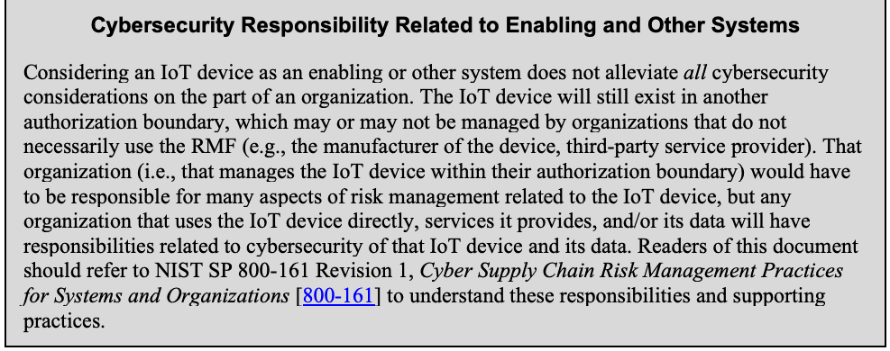
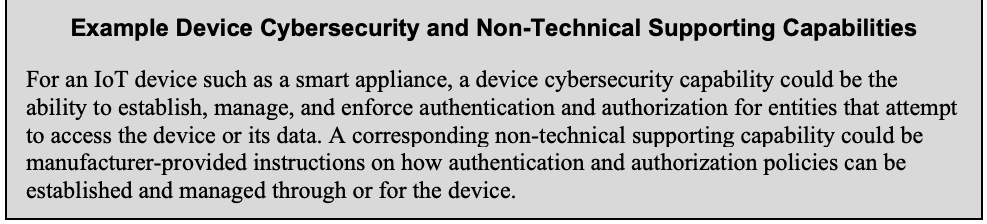
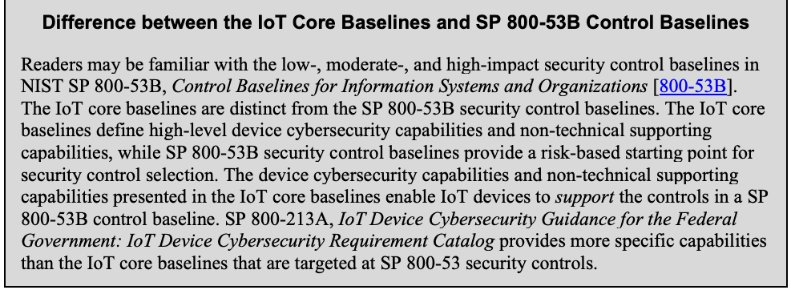
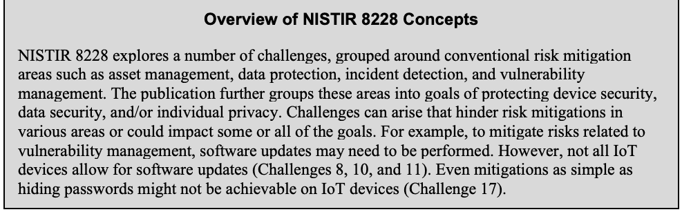
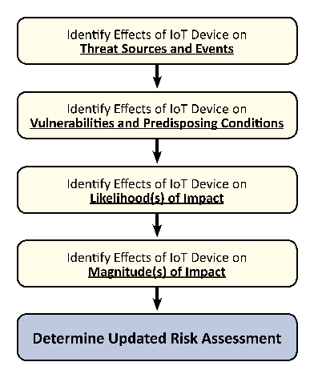
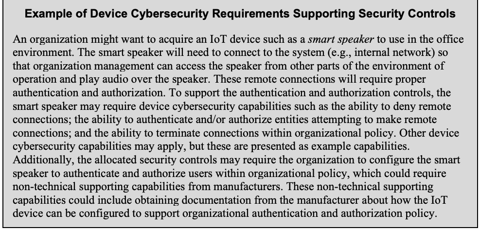
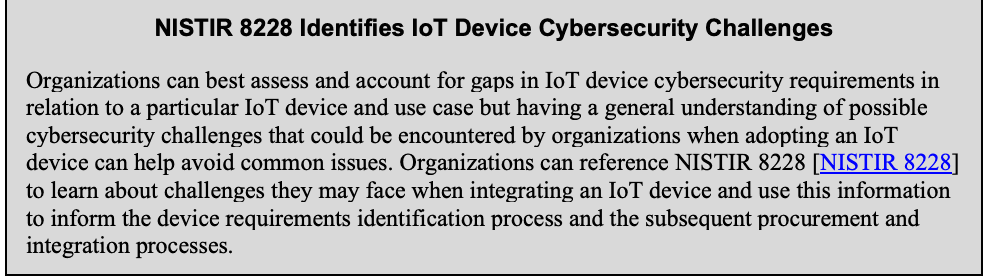

NIST Special Publication · PDF 原文抽出
IoT Device Cybersecurity Guidance for the Federal Government: Establishing IoT Device Cybersecurity Requirements
連邦政府向けIoTデバイスのサイバーセキュリティガイダンス：IoTデバイスのサイバーセキュリティ要件の策定
NIST SP 800-213（IoT Device Cybersecurity Guidance for the Federal Government: Establishing IoT Device Cybersecurity Requirements）の英文と日本語訳を段落ごとに並べた閲覧用ページです。IoTデバイスを情報システムに導入する際のリスク管理と、組織がデバイスやメーカーに求めるサイバーセキュリティ要件の定め方を示します。 翻訳は有志による非公式のもので、NIST および米国商務省が作成・承認・推奨したものではありません。要件の確認にはNIST の正式版 PDFを参照してください。
PDF から抽出した原文は、原本のページ画像と照合済みです。
PDF p.9: 本文段落の続きが脚注2の抽出ブロックに混入していたため、文脈に基づき段落へ戻しました。原本との最終照合は未完了です。
PDF p.43: 抽出順で[CSF]ラベルより前にCSF引用の冒頭句がCNSSI引用末尾へ混入していたため、視覚照合に基づきCSF引用本文へ戻しました。
PDF p.43: 参考文献の抽出順で[CSF]および[NICE]の引用冒頭句が先行する文献ブロックに混入していたため、原本の行順に合わせて各引用へ戻しました。
PDF p.46–47: 附属書Bは二段組の用語集で、用語・出典注記・定義が複数ブロックに分割され、列間の対応が抽出順で混在する箇所を視覚照合で確認しました。訳文は内容を保っていますが、用語と定義の対応・読み順の最終確認が必要です。
PDF p.3, 14, 16, 18, 19, 32, 36: 表として抽出されていた文章囲み8件を原本画像で確認し、表構造ではなく灰色の文章コールアウトであるためkind=noteへ修正しました。
本文の数式はLaTeXの構造からKaTeXで表示しています。
NIST Special Publication 800-213
NIST特別刊行物800-213
IoT Device Cybersecurity Guidance for
IoTデバイスのサイバーセキュリティガイダンス
the Federal Government:
連邦政府向け：
Establishing IoT Device Cybersecurity Requirements
IoTデバイスのサイバーセキュリティ要件の策定
Michael Fagan Jeffrey Marron Kevin G. Brady, Jr. Barbara B. Cuthill Katerina N. Megas Rebecca Herold David Lemire Brad Hoehn
Michael Fagan、Jeffrey Marron、Kevin G. Brady, Jr.、Barbara B. Cuthill、Katerina N. Megas、Rebecca Herold、David Lemire、Brad Hoehn
This publication is available free of charge from: https://doi.org/10.6028/NIST.SP.800-213
本刊行物は次のURLから無料で入手できる：https://doi.org/10.6028/NIST.SP.800-213
NIST Special Publication 800-213
NIST Special Publication 800-213
IoT Device Cybersecurity Guidance for the Federal Government:
連邦政府向けIoTデバイスのサイバーセキュリティガイダンス：
Establishing IoT Device Cybersecurity Requirements
IoTデバイスのサイバーセキュリティ要件の策定
Michael Fagan Jeffrey Marron Kevin G. Brady, Jr. Barbara B. Cuthill Katerina N. Megas
Michael Fagan Jeffrey Marron Kevin G. Brady, Jr. Barbara B. Cuthill Katerina N. Megas
Applied Cybersecurity Division Information Technology Laboratory
Applied Cybersecurity Division Information Technology Laboratory
Rebecca Herold The Privacy Professor Des Moines, IA
Rebecca Herold The Privacy Professor アイオワ州デモイン
David Lemire Brad Hoehn
David Lemire Brad Hoehn
Huntington Ingalls Industries Annapolis Junction, MD
Huntington Ingalls Industries、メリーランド州アナポリス・ジャンクション
This publication is available free of charge from: https://doi.org/10.6028/NIST.SP.800-213
本刊行物は次のURLから無料で入手できる：https://doi.org/10.6028/NIST.SP.800-213
November 2021
2021年11月
U.S. Department of Commerce Gina M. Raimondo, Secretary
米国商務省 Gina M. Raimondo 長官
National Institute of Standards and Technology
National Institute of Standards and Technology
James K. Olthoff, Performing the Non-Exclusive Functions and Duties of the Under Secretary of Commerce for Standards and Technology & Director, National Institute of Standards and Technology
James K. Olthoff、商務次官（標準・技術担当）兼米国国立標準技術研究所所長の非専属の職務と義務を遂行
Authority
権限
This publication has been developed by NIST in accordance with its statutory responsibilities under the Federal Information Security Modernization Act (FISMA) of 2014, 44 U.S.C. § 3551 et seq., Public Law (P.L.) 113-283. NIST is responsible for developing information security standards and guidelines, including minimum requirements for federal information systems, but such standards and guidelines shall not apply to national security systems without the express approval of appropriate federal officials exercising policy authority over such systems. This guideline is consistent with the requirements of the Office of Management and Budget (OMB) Circular A-130.
本刊行物は、2014年連邦情報セキュリティ近代化法（FISMA）、合衆国法典第44編第3551条以下、公法113-283号に基づく法定責任に従ってNISTが策定した。NISTは、連邦情報システムの最低要件を含む情報セキュリティ標準と指針の策定に責任を負う。ただし、適切な連邦当局者が当該システムに関する政策権限を行使して明示的に承認しない限り、これらの標準と指針は国家安全保障システムには適用されない。本指針は、行政管理予算局（OMB）通達A-130の要件に準拠している。
Nothing in this publication should be taken to contradict the standards and guidelines made mandatory and binding on federal agencies by the Secretary of Commerce under statutory authority. Nor should these guidelines be interpreted as altering or superseding the existing authorities of the Secretary of Commerce, Director of the OMB, or any other federal official. This publication may be used by nongovernmental organizations on a voluntary basis and is not subject to copyright in the United States. Attribution would, however, be appreciated by NIST.
本刊行物のいかなる記述も、法的権限に基づき商務長官が連邦機関に義務付け、拘束力を持たせた標準や指針に反すると解釈してはならない。また、本指針を、商務長官、OMB長官、その他の連邦当局者が有する既存の権限を変更または置換するものと解釈してはならない。本刊行物は非政府組織が任意に利用でき、米国内では著作権の対象とならない。ただし、NISTへの出典表示を歓迎する。
National Institute of Standards and Technology Special Publication 800-213 Natl. Inst. Stand. Technol. Spec. Publ. 800-213, 47 pages (November 2021) CODEN: NSPUE2
National Institute of Standards and Technology Special Publication 800-213 Natl. Inst. Stand. Technol. Spec. Publ. 800-213, 47ページ（2021年11月） CODEN: NSPUE2
This publication is available free of charge from: https://doi.org/10.6028/NIST.SP.800-213
本刊行物は次のURLから無料で入手できる：https://doi.org/10.6028/NIST.SP.800-213
Certain commercial entities, equipment, or materials may be identified in this document in order to describe an experimental procedure or concept adequately. Such identification is not intended to imply recommendation or endorsement by NIST, nor is it intended to imply that the entities, materials, or equipment are necessarily the best available for the purpose.
本書では、実験的な手順や概念を適切に説明するため、特定の商業的主体、機器、または資材が特定される場合がある。こうした特定は、NISTによる推奨または支持を意味するものではなく、それらの主体、資材、または機器がその目的に対して必ずしも最良であることを意味するものでもない。
There may be references in this publication to other publications currently under development by NIST in accordance with its assigned statutory responsibilities. The information in this publication, including concepts and methodologies, may be used by federal agencies even before the completion of such companion publications. Thus, until each publication is completed, current requirements, guidelines, and procedures, where they exist, remain operative. For planning and transition purposes, federal agencies may wish to closely follow the development of these new publications by NIST.
本刊行物には、NISTが割り当てられた法定責任に従って現在策定中の他の刊行物への言及が含まれる場合がある。概念や方法論を含め、本刊行物の情報は、そうした関連刊行物の完成前であっても連邦機関が利用してよい。したがって、各刊行物が完成するまでは、現行の要件、指針、手順が存在する場合、それらは引き続き有効である。計画と移行のため、連邦機関はNISTによるこれらの新しい刊行物の策定状況を注意深く追うことを検討してもよい。
Organizations are encouraged to review all draft publications during public comment periods and provide feedback to NIST. Many NIST cybersecurity publications, other than the ones noted above, are available at https://csrc.nist.gov/publications.
組織は、パブリックコメント期間中にすべての草案刊行物をレビューし、NISTにフィードバックを提供することが推奨される。上記以外の多くのNISTサイバーセキュリティ刊行物は、https://csrc.nist.gov/publications で入手できる。
Comments on this publication can be submitted to:
本刊行物へのコメントの提出先：
National Institute of Standards and Technology Attn: Applied Cybersecurity Division, Information Technology Laboratory 100 Bureau Drive (Mail Stop 2000) Gaithersburg, MD 20899-2000 Email: iotsecurity@nist.gov
National Institute of Standards and Technology Attn: Applied Cybersecurity Division, Information Technology Laboratory 100 Bureau Drive (Mail Stop 2000) Gaithersburg, MD 20899-2000 Email: iotsecurity@nist.gov
All comments are subject to release under the Freedom of Information Act (FOIA).
すべてのコメントは、情報公開法（FOIA）に基づく公開の対象となる。
Reports on Computer Systems Technology
コンピュータシステム技術に関する報告
The Information Technology Laboratory (ITL) at the National Institute of Standards and Technology (NIST) promotes the U.S. economy and public welfare by providing technical leadership for the Nation’s measurement and standards infrastructure. ITL develops tests, test methods, reference data, proof of concept implementations, and technical analyses to advance the development and productive use of information technology. ITL’s responsibilities include the development of management, administrative, technical, and physical standards and guidelines for the cost-effective security and privacy of other than national security-related information in federal information systems. The Special Publication (SP) 800-series reports on ITL’s research, guidelines, and outreach efforts in information system security, and its collaborative activities with industry, government, and academic organizations.
米国国立標準技術研究所（NIST）の情報技術研究所（ITL）は、米国の計測・標準基盤に技術的なリーダーシップを発揮し、米国経済と公共の福祉を促進する。ITLは、情報技術の開発と生産的な利用を進めるため、テスト、テスト方法、参照データ、概念実証実装、技術分析を開発する。ITLの責務には、国家安全保障関連以外の連邦情報システムにおける情報のセキュリティとプライバシーを費用対効果の高い方法で確保するための管理、運用、技術、物理的な標準および指針の策定が含まれる。特別刊行物（SP）800シリーズは、情報システムセキュリティに関するITLの研究、指針、普及活動と、産業界、政府、学術機関との協働活動を報告する。
Abstract
概要
Organizations will increasingly use Internet of Things (IoT) devices for the mission benefits they can offer, but care must be taken in the acquisition and implementation of IoT devices. This publication contains background and recommendations to help organizations consider how an IoT device they plan to acquire can integrate into a system. IoT devices and their support for security controls are presented in the context of organizational and system risk management. This publication provides guidance on considering system security from the device perspective. This allows for the identification of device cybersecurity requirements—the abilities and actions an organization will expect from an IoT device and its manufacturer and/or third parties, respectively.
組織は、IoTデバイスがもたらすミッション上の利点を活用するため、今後ますますIoTデバイスを使用するようになる。ただし、IoTデバイスの取得と導入には慎重な対応が必要である。本刊行物は、取得を計画するIoTデバイスをシステムにどのように統合できるか検討するための背景情報と推奨事項を示す。IoTデバイスとセキュリティ制御への対応を、組織およびシステムのリスク管理の文脈で扱う。また、デバイスの視点からシステムセキュリティを検討する指針を示す。これにより、組織がIoTデバイスに期待する能力と、その製造者および／または第三者に期待する行動、すなわちデバイスのサイバーセキュリティ要件を、それぞれ特定できる。
Keywords
キーワード
Cybersecurity baseline; Internet of Things (IoT); securable computing devices; security requirements; Risk Management Framework; Cybersecurity Framework.
サイバーセキュリティ基準、モノのインターネット（IoT）、保護可能なコンピューティングデバイス、セキュリティ要件、リスク管理フレームワーク、サイバーセキュリティフレームワーク。
Supplemental Content
補足コンテンツ
The NIST Cybersecurity for IoT Team has undertaken an effort that aims to help manufacturers and federal government organizations better understand the device cybersecurity capabilities and supporting non-technical capabilities that may be needed from or around IoT devices used by federal government organizations. To that end, NIST has developed a catalog of IoT device cybersecurity capabilities and supporting non-technical capabilities for manufacturers and IoT device customers. The catalog identifies technical and non-technical capabilities that may be necessary for supporting NIST SP 800-53 Rev. 5 [800-53] controls implemented in systems. Just as not every Federal Information Technology (IT) system uses every control, not every capability in the catalog is needed in every IoT device. Ultimately, the goal is to enable organizations to securely incorporate IoT devices into their systems and meet their security requirements. The catalog can be found in SP 800-213A, IoT Guidance for the Federal Government: IoT Device Cybersecurity Requirement Catalog [800-213A].
NISTサイバーセキュリティ・フォー・IoTチームは、連邦政府機関が使用するIoTデバイスに、またはその周辺で必要となる可能性のあるデバイスのサイバーセキュリティ能力と、それを支援する非技術的能力について、製造者と連邦政府機関の理解を深める取り組みを行っている。その一環としてNISTは、製造者およびIoTデバイスの顧客向けに、IoTデバイスのサイバーセキュリティ能力と、それを支援する非技術的能力のカタログを作成した。このカタログは、システムに実装されるNIST SP 800-53改訂5［800-53］の制御を支援するために必要となる可能性のある技術的・非技術的能力を特定する。すべての連邦情報技術（IT）システムがすべての制御を使用するわけではないのと同様に、カタログのすべての能力がすべてのIoTデバイスに必要なわけではない。最終的な目標は、組織がIoTデバイスをシステムに安全に組み込み、セキュリティ要件を満たせるようにすることである。カタログはSP 800-213A「連邦政府向けIoTガイダンス：IoTデバイスのサイバーセキュリティ要件カタログ」［800-213A］に掲載されている。
Acknowledgments
謝辞
The authors wish to thank all contributors to this publication, including the participants in workshops and other interactive sessions; the individuals and organizations from the public and private sectors, including manufacturers from various sectors as well as several manufacturer trade organizations, who provided feedback on the preliminary public content; and colleagues at NIST who offered invaluable inputs and feedback. Special thanks to the NIST Risk Management Framework team for their extensive feedback.
著者は、本刊行物に貢献したすべての方々に感謝する。ワークショップやその他の対話型セッションの参加者、暫定的な公開コンテンツに意見を寄せた官民両部門の個人・組織（さまざまな分野の製造者や複数の製造者業界団体を含む）、貴重な意見やフィードバックを提供したNISTの同僚に謝意を表する。特に、幅広いフィードバックを寄せたNISTリスク管理フレームワークチームに感謝する。
Audience
対象読者
The target audience of this publication is information security professionals, system administrators, and others in organizations tasked with assessing, applying, and maintaining security on a system.
本刊行物の対象読者は、システムのセキュリティ評価、適用、維持を担当する組織の情報セキュリティ専門家、システム管理者などである。
Patent Disclosure Notice
特許開示に関する通知
NOTICE: The Information Technology Laboratory (ITL) has requested that holders of patent claims whose use may be required for compliance with the guidance or requirements of this publication disclose such patent claims to ITL. However, holders of patents are not obligated to respond to ITL calls for patents, and ITL has not undertaken a patent search in order to identify which, if any, patents may apply to this publication.
通知：情報技術研究所（ITL）は、本刊行物の指針または要件への適合に使用が必要となる可能性のある特許請求の範囲を保有する者に対し、その開示を求めている。ただし、特許保有者はITLによる特許情報の照会に応じる義務はなく、ITLも本刊行物に適用される可能性のある特許の有無を特定するための特許調査を行っていない。
As of the date of publication and following call(s) for the identification of patent claims whose use may be required for compliance with the guidance or requirements of this publication, no such patent claims have been identified to ITL.
刊行日時点で、本刊行物の指針または要件への適合に使用が必要となる可能性のある特許請求の範囲の特定を求めた結果、ITLには該当する特許請求の範囲は報告されていない。
No representation is made or implied by ITL that licenses are not required to avoid patent infringement in the use of this publication.
本刊行物の利用において特許侵害を避けるためのライセンスが不要であると、ITLが明示または黙示に表明するものではない。
Table of Contents
目次
1 Introduction — 1
1 はじめに — 1
1.1 Purpose and Applicability — 2
1.1 目的と適用範囲 — 2
1.2 Target Audience — 2
1.2 対象読者 — 2
1.3 Relationship to Other Publications — 3
1.3 他の刊行物との関係 — 3
1.4 Document Conventions — 3
1.4 文書の表記規則 — 3
1.5 Publication Organization — 3
1.5 文書の構成 — 3
2 Background Considerations — 4
2 背景となる考慮事項 — 4
2.1 Systems and Elements — 4
2.1 システムと構成要素 — 4
2.2 How IoT Devices Support Security — 7
2.2 IoTデバイスがセキュリティを支援する方法 — 7
2.3 How IoT Devices May Create Security Challenges — 10
2.3 IoTデバイスがセキュリティ上の課題を生じさせる可能性 — 10
3 Identifying Device Cybersecurity Requirements for IoT Devices — 12
3 IoTデバイスのサイバーセキュリティ要件の特定 — 12
3.1 IoT Device Cybersecurity Considerations — 13
3.1 IoTデバイスのサイバーセキュリティに関する考慮事項 — 13
3.2 Assessing Risk and Determining Required Security Controls — 18
3.2 リスク評価と必要なセキュリティ管理策の決定 — 18
3.2.1 Effects on Threat Sources and Events — 19
3.2.1 脅威源および脅威事象への影響 — 19
3.2.2 Effects on Vulnerabilities and Predisposing Conditions — 20
3.2.2 脆弱性およびリスクを高める状態への影響 — 20
3.2.3 Effects on Likelihood(s) of Occurrence of Threats — 21
3.2.3 脅威の発生可能性への影響 — 21
3.2.4 Effects on Magnitude(s) of Impact of Threats — 22
3.2.4 脅威による影響の大きさへの影響 — 22
3.2.5 Determine Updated Risk Assessment — 22
3.2.5 リスク評価の更新 — 22
3.3 Identifying Device Cybersecurity Requirements — 23
3.3 デバイスのサイバーセキュリティ要件の特定 — 23
3.3.1 Identifying Requirements using SP 800-213A — 24
3.3.1 SP 800-213Aを使った要件の特定 — 24
3.3.2 Identifying Requirements using Other Resources — 25
3.3.2 その他の資料を使った要件の特定 — 25
4 Understanding Risk Management Options for IoT Devices — 27
4 IoTデバイスのリスク管理オプションの理解 — 27
4.1 Potential Challenges Meeting Device Cybersecurity Requirements — 27
4.1 デバイスのサイバーセキュリティ要件を満たす際に生じ得る課題 — 27
4.2 Managing Gaps in IoT Device Cybersecurity Requirements — 29
4.2 IoTデバイスのサイバーセキュリティ要件の不足への対処 — 29
References — 33
参考文献 — 33
List of Appendices
付録一覧
Acronyms — 37
略語 — 37
Glossary — 38
用語集 — 38
List of Figures
図一覧
Figure 1: Visualization of the System and Environment — 4
図1：システムと環境の概観 — 4
Figure 2: Information Security Requirements Integration to the Element Level — 7
図2：情報セキュリティ要件を構成要素レベルへ統合する — 7
Figure 3: Role of Device Cybersecurity and Non-Technical Supporting Capabilities in Satisfying Security Capabilities and Requirements — 9
図3：セキュリティ能力と要件の充足における、デバイスのサイバーセキュリティ能力と非技術的支援能力の役割 — 9
Figure 4: Organizations Can Use this Section to Identify IoT Device Cybersecurity Requirements — 12
図4：組織はこの節を用いてIoTデバイスのサイバーセキュリティ要件を特定できる — 12
Figure 5: Steps to Updating a Risk Model and Risk Assessment using New Information about an IoT Device. — 19
図5：IoTデバイスに関する新しい情報を用いてリスクモデルとリスク評価を更新する手順。 — 19
Figure 6: Effects on Risk Assessment due to IoT Device Informs the Risk Assessment of the Entire System. — 22
図6：IoTデバイスに起因するリスク評価への影響は、システム全体のリスク評価に反映される。 — 22
Figure 7: Organizations Can Gather Information to Update the System Risk Assessment and Determine Device Cybersecurity Requirements — 23
図7：組織は情報を収集して、システムのリスク評価を更新し、デバイスのサイバーセキュリティ要件を決定できる — 23
Figure 8: Likely Outcomes for Organizations based on the Four Determinations Discussed — 31
図8：説明した4つの判定に基づく、組織にとって想定される結果 — 31
1 Introduction
1 はじめに
As Internet of Things (IoT) technology evolves, it is inevitable that most organizations1 will integrate this equipment into systems2. IoT3 technology creates many opportunities for organizations in support of mission objectives. IoT technology may also present security challenges throughout the lifecycle if proper considerations are not made during the acquisition and integration of an IoT device.
モノのインターネット（IoT）技術の進展に伴い、ほとんどの組織¹がこの機器をシステム²に組み込むことは避けられない。IoT³技術は、組織のミッション目標を支援する多くの機会を生み出す。一方、IoTデバイスの取得・統合時に適切な考慮をしなければ、ライフサイクル全体でセキュリティ上の課題を招く可能性もある。
Existing NIST risk management guidance helps organizations identify, communicate, and satisfy the security requirements4 to support mission and business functions and manage risk across the organization from the system level to the organizational level. However, the increasing scale, heterogeneity, and pace of IoT deployment motivates a focus on security requirement support below the information system level, at the system element level5. IoT devices used by organizations will frequently be integrated as system elements, and this integration will often happen well after the information system has been initially deployed. It is important that organizations identify support for system and organizational security capabilities needed from individual system elements (e.g., IoT devices) to help manage risk to the system to which they connect. As an example, an organization may purchase voice-activated printers and integrate them into the existing enterprise network. Organizations must also grapple with the challenge that many IoT devices lack features and functions that are common in conventional information technology (IT) equipment. This lack of functionality in IoT devices can cause security concerns; for example, an IoT device may lack the capability to update software.
既存のNISTリスク管理指針は、ミッションや業務機能を支えるセキュリティ要件⁴を組織が特定し、伝達し、満たすとともに、システムレベルから組織レベルまで組織全体のリスクを管理するのに役立つ。しかし、IoT導入の規模、異種性、速度の増大により、情報システムレベルより下位のシステム構成要素レベル⁵で、セキュリティ要件を支援することに焦点を当てる必要が生じている。組織が使用するIoTデバイスはシステム構成要素として統合されることが多く、その統合は情報システムの初期導入からかなり後に行われることも多い。接続先システムのリスク管理を支援するために、個々のシステム構成要素（例：IoTデバイス）に求められるシステムおよび組織のセキュリティ能力への支援を、組織が特定することが重要である。たとえば、組織は音声操作プリンターを購入し、既存の企業ネットワークに統合する場合がある。組織は、多くのIoTデバイスに従来の情報技術（IT）機器で一般的な機能が欠けているという課題にも対処しなければならない。IoTデバイスの機能不足はセキュリティ上の懸念を引き起こす可能性がある。たとえば、IoTデバイスにはソフトウェアを更新する機能がない場合がある。
1 Like other NIST guidance, organization is meant to describe entities of any size, complexity, or positioning within an organizational structure (e.g., a federal agency or, as appropriate, any of its operational elements).
¹ 他のNIST指針と同様に、ここでいう「組織」は、組織構造における規模、複雑さ、位置付けを問わず、あらゆる主体を指す（例：連邦機関、または適切な場合にはその運用部門）。
2 A system is an interconnected set of resources that share a common functionality used or operated by an agency, a contractor of an agency, or another organization on behalf of an agency. While the term information systems is used in the document, the scope of the document and concerns discussed could also apply to other systems, including some operational technology (OT) systems. According to NIST guidance [800-18, 800-30, 800-37, 800-39, 800-60] and FIPS 200 [FIPS-200], the terms information system and system are synonymous. NIST 800-37 Rev. 2 notes that “there are many types of systems. Examples include: general and special-purpose information systems; command, control, and communication systems; … industrial/process control systems; … medical devices and treatment systems; …” [800-37] Therefore, most OT systems would be considered information systems as well, but the further question remains of the applicability of this publication to a specific system. IoT devices naturally bring many connections to a system through their actuation and networking capabilities. Any system that includes an IoT device as a system element will find value in this publication. Systems that do not incorporate IoT devices may find value in the guidance within this publication, but some concepts and discussion may not be applicable to or align with the system of interest.
² システムとは、機関、その請負業者、または機関を代理する別の組織が使用または運用する、共通の機能を共有する相互接続された資源の集合である。本書では「情報システム」という用語を用いるが、本書の対象範囲と論点は、一部の運用技術（OT）システムを含む他のシステムにも適用される場合がある。NIST指針［800-18、800-30、800-37、800-39、800-60］およびFIPS 200［FIPS-200］によれば、「情報システム」と「システム」は同義である。NIST 800-37改訂2は、「さまざまな種類のシステムがある。例として、汎用および専用情報システム、指揮・統制・通信システム、…産業／プロセス制御システム、…医療機器および治療システム、…がある」と述べている［800-37］。したがって、ほとんどのOTシステムも情報システムとみなされるが、本刊行物が特定のシステムに適用されるかという別の問題は残る。IoTデバイスは、その作動機能とネットワーク機能を通じて、システムに多くの接続を自然にもたらす。IoTデバイスをシステム構成要素として含むシステムであれば、本刊行物が役立つだろう。IoTデバイスを組み込まないシステムも本刊行物の指針が役立つ場合があるが、一部の概念や議論は対象システムに適用できない、または整合しない可能性がある。
To help organizations with these and other IoT-related challenges, this publication provides guidance on considering system security from the device perspective. This allows for more direct identification of device cybersecurity requirements—the abilities and actions an organization will expect from an IoT device and its manufacturer and/or third parties, respectively.
これらのIoT関連課題に組織が対処できるよう、本刊行物はデバイスの視点からシステムセキュリティを検討する指針を示す。これにより、組織がIoTデバイス、その製造者、および／または第三者にそれぞれ期待する能力や行動である、デバイスのサイバーセキュリティ要件をより直接的に特定できる。
1.1 Purpose and Applicability
1.1 目的と適用範囲
This publication is intended to help organizations incorporate IoT devices into an existing information system as system elements. IoT devices in-scope for this publication have at least one transducer (sensor or actuator) for interacting directly with the physical world and at least one network interface (e.g., Ethernet, Wi-Fi, Bluetooth, Long-term Evolution (LTE), Zigbee, Ultra-Wideband (UWB)) for interfacing with the digital world. The IoT devices in-scope for this publication can function on their own, although they may be dependent on other specific devices (e.g., an IoT hub) or systems (e.g., a cloud) for some functionality6. While this publication might be helpful for IoT deployments that fall outside this scope or for other situations (e.g., when IoT devices are being integrated as system elements from the conception of an information system), other NIST publications, such as the Risk Management Framework (RMF) and suite of security standards and guidance,7 address those situations more directly.
本刊行物は、既存の情報システムにIoTデバイスをシステム構成要素として組み込む際に役立つことを目的とする。本刊行物の対象となるIoTデバイスは、物理世界と直接やり取りする少なくとも1つのトランスデューサー（センサーまたはアクチュエーター）と、デジタル世界に接続する少なくとも1つのネットワークインターフェース（イーサネット、Wi-Fi、Bluetooth、Long-Term Evolution（LTE）、Zigbee、Ultra-Wideband（UWB）など）を備える。対象デバイスは単独で機能できるが、一部の機能について特定の他デバイス（IoTハブなど）またはシステム（クラウドなど）に依存する場合がある⁶。本刊行物の対象範囲外のIoT導入や、情報システムの構想段階からIoTデバイスをシステム構成要素として統合する場合などにも役立つ可能性はあるが、そのような状況にはリスク管理フレームワーク（RMF）や一連のセキュリティ標準・指針など、他のNIST刊行物⁷がより直接的に対処している。
1.2 Target Audience
1.2 対象読者
The target audience of this publication is information security professionals, system administrators, and others in organizations tasked with assessing, applying, and maintaining security on a system. Personnel within the following Workforce Categories and Specialty Areas from the National Initiative for Cybersecurity Education (NICE) Workforce Framework for Cybersecurity [NICE] are most likely to find this publication of interest as are their privacy counterparts:
本刊行物の対象読者は、システムのセキュリティ評価、適用、維持を担当する組織の情報セキュリティ専門家、システム管理者などである。次に挙げる国家サイバーセキュリティ教育イニシアチブ（NICE）の「サイバーセキュリティ人材フレームワーク」［NICE］の職務カテゴリと専門分野に属する要員、およびプライバシー分野の対応職種の要員は、本刊行物に特に関心を持つ可能性が高い。
•Securely Provision: Risk Management, Systems Architecture, Systems Development
•安全な提供：リスク管理、システムアーキテクチャー、システム開発
•Operate and Maintain: Data Administration, Network Services, Systems Administration, Systems Analysis
•運用と保守：データ管理、ネットワークサービス、システム管理、システム分析
•Oversee and Govern: Cybersecurity Management, Executive Cyber Leadership, Program/Project Management and Acquisition
•監督と統治：サイバーセキュリティ管理、経営層のサイバーリーダーシップ、プログラム／プロジェクト管理と取得
•Protect and Defend: Cybersecurity Defense Analysis, Cybersecurity Defense Infrastructure Support, Incident Response, Vulnerability Assessment and Management
•保護と防御：サイバーセキュリティ防御分析、サイバーセキュリティ防御基盤支援、インシデント対応、脆弱性の評価と管理
1.3 Relationship to Other Publications
1.3 他の刊行物との関係
This publication uses concepts from the NIST Risk Management Framework, specifically publications such as NIST SPs 800-18 Rev. 1 [800-18], 800-30 Rev. 1 [800-30], 800-37 Rev. 2 [800-37], 800-39 [800-39], 800-53 Rev. 5 [800-53], 800-60 Vol. 1 Rev. 1 [800-60], and 800-160 Vol. 1 [800-160v1] and Vol. 2 [800-160v2], as well as SP 800-82 Rev. 2 [800-82] and the NIST Cybersecurity Framework [CSF]. It also follows from the foundational cybersecurity for IoT work from NIST documented in NISTIR 8228 [IR8228] and the NISTIR 8259 series [IR8259, IR8259A, IR8259B]. Details on the relationship to these other publications is in Section 2.
本刊行物は、NISTリスク管理フレームワークの概念を用いる。具体的には、NIST SP 800-18改訂1［800-18］、800-30改訂1［800-30］、800-37改訂2［800-37］、800-39［800-39］、800-53改訂5［800-53］、800-60第1巻改訂1［800-60］、800-160第1巻［800-160v1］および第2巻［800-160v2］、SP 800-82改訂2［800-82］、NISTサイバーセキュリティフレームワーク［CSF］などを参照している。また、NISTIR 8228［IR8228］とNISTIR 8259シリーズ［IR8259、IR8259A、IR8259B］に記載された、NISTのIoTサイバーセキュリティに関する基礎的な取り組みも踏まえている。これらの刊行物との関係の詳細は第2節に示す。
This publication uses both the terms “security” and “cybersecurity.” For most purposes, these terms are interchangeable and relate to protecting confidentiality, integrity, and availability of data. As a convention, “security” is used when discussing the protection of the system while “cybersecurity” is used when discussing how system elements might support security or protect security themselves. This mixed terminology is motivated by the common use of the term “security” in the RMF, but the term “cybersecurity” is used for the same concepts in IoT to avoid confusion with physical security/safety requirements.
本刊行物では「security」と「cybersecurity」の両方を用いる。多くの場合、両者は同じ意味であり、データの機密性、完全性、可用性を保護することに関連する。慣例として、システムを保護することについて述べる場合は「security」を用い、システム構成要素がセキュリティを支援する方法、または構成要素自身がセキュリティを保護する方法について述べる場合は「cybersecurity」を用いる。この用語の使い分けは、RMFで「security」が一般的に使われる一方、IoTでは物理的なセキュリティ／安全要件との混同を避けるため、同じ概念に「cybersecurity」が使われることを踏まえている。
1.4 Document Conventions
1.4 文書の表記規則
This publication uses conventions relative to other RMF guidance that should be understood:
本刊行物では、他のRMF指針との関係で、次の表記規則を用いており、これらを理解しておくべきである。
This document contains guidance for federal organizations when acquiring and/or integrating an IoT device into an existing system.
本書は、連邦組織がIoTデバイスを取得する際、および／または既存システムに統合する際の指針を示す。
a. Where the term “shall” is used, the statement is to be interpreted as a requirement. b. Where the term “should” is used, the statement is to be interpreted as a recommendation.
a. 「shall」という用語を用いる箇所は、要件として解釈する。b. 「should」という用語を用いる箇所は、推奨事項として解釈する。
1.5 Publication Organization
1.5 刊行物の構成
The rest of this publication is organized as follows:
本刊行物の以降の構成は次のとおりである。
•Section 2 provides background considerations and connects the challenges presented by IoT devices with risk management practices discussed in NIST publications.
•第2節では、背景となる考慮事項を示し、IoTデバイスがもたらす課題をNIST刊行物で論じられているリスク管理プラクティスと結び付ける。
•Section 3 details how the background considerations in Section 2 can be used with existing sources to identify device cybersecurity requirements.
•第3節では、第2節の背景となる考慮事項を既存の情報源と組み合わせ、デバイスのサイバーセキュリティ要件を特定する方法を詳述する。
•Section 4 describes how an organization can navigate security challenges that arise when IoT devices do not meet device cybersecurity requirements as anticipated.
•第4節では、IoTデバイスが想定どおりにデバイスのサイバーセキュリティ要件を満たさない場合に生じるセキュリティ課題に、組織がどのように対処できるかを説明する。
2 Background Considerations
2 背景となる考慮事項
This section presents background information about IoT devices that organizations should consider in their device acquisition processes. This publication draws from other NIST guidance, namely the Risk Management Framework (RMF) [800-37], the Cybersecurity Framework (CSF) [CSF], and NIST SP 800-161, Cyber Supply Chain Risk Management Practices for Systems and Organizations [800-161]. Organizations familiar with this guidance and the context of IoT devices within a system could skip this section. It is expected that organizations will follow the RMF steps to manage risk to the system and organization throughout the system development life cycle. As IoT devices are introduced to the system, often after it is in operation, it is critical to consider the security impact of such changes. Since IoT devices will often be integrated into existing systems, this publication will provide guidance for organizations in the context of the RMF.
本節では、組織がIoTデバイスを調達する際に考慮すべき背景情報を示す。本刊行物は、リスクマネジメントフレームワーク（RMF）[800-37]、サイバーセキュリティフレームワーク（CSF）[CSF]、およびNIST SP 800-161『システムおよび組織のためのサイバーサプライチェーンリスクマネジメント実践』[800-161]など、他のNISTガイダンスを参照している。これらのガイダンスと、システム内におけるIoTデバイスの位置付けに精通している組織は、本節を省略してもよい。組織は、システム開発ライフサイクル全体を通じて、RMFの手順に従いシステムおよび組織のリスクを管理することが想定される。IoTデバイスは、システムの運用開始後に導入されることも多いため、そのような変更がセキュリティに及ぼす影響を考慮することが重要である。IoTデバイスは既存システムに統合されることが多いため、本刊行物では、組織がRMFを適用する際のIoTデバイスに関するガイダンスを示す。
2.1 Systems and Elements
2.1 システムと構成要素
As discussed in Section 1, federal cybersecurity risk management processes generally consider the security of organizations and systems, and highlight that systems are made up of elements. Increasingly, IoT devices may become elements of systems. The relationship between systems and elements is a foundational concept in this publication. To understand more about this relationship between systems and elements, readers should refer to NIST Special Publication 800-37, Revision 2, Risk Management Framework for Information Systems and Organizations: A System Life Cycle Approach for Security and Privacy [800-37]. Some of the key concepts, particularly those covered in section 2.4 of SP 800-37 Rev. 2, will be highlighted here. Figure 1 shows these concepts visually, adapted from a figure in SP 800-37 Rev. 2, Revision 2.
第1節で述べたように、連邦政府のサイバーセキュリティリスクマネジメントプロセスでは、一般に組織とシステムのセキュリティを検討し、システムが複数の構成要素から成ることを重視する。IoTデバイスがシステムの構成要素となるケースは増えている。システムと構成要素の関係は、本刊行物の基礎となる概念である。この関係を詳しく理解するには、NIST特別刊行物800-37改訂第2版『情報システムおよび組織のためのリスクマネジメントフレームワーク：セキュリティとプライバシーのためのシステムライフサイクルアプローチ』[800-37]を参照されたい。特にSP 800-37 Rev. 2の2.4節で扱う主要概念を、ここで取り上げる。図1は、SP 800-37 Rev. 2の図を基に、これらの概念を視覚的に示す。
![Figure 1: Visualization of the System and Environment. A gray box labeled Environment of Operation contains a blue box labeled FEDERAL SYSTEM (Authorization Boundary). Inside the federal system are four ovals in a two-by-two grid, joined by dotted lines: Element, Element, Element, and Element (IoT Device). Outside the federal system but inside the environment of operation, boxes labeled Enabling System and Other System are each connected to the federal system by a double-headed arrow. Outside the environment of operation, on the right, a box labeled Enabling System is connected to the federal system by a double-headed arrow.](assets/213/p0012-figure-01.png)
図1：システムと環境の概念図。Environment of Operation（運用環境）と記された灰色の枠の中に、FEDERAL SYSTEM (Authorization Boundary)（連邦システム：認可境界）と記された青い枠がある。連邦システムの中には 4 つの楕円が 2 行 2 列に並び、点線で結ばれている。Element、Element、Element、Element (IoT Device)（構成要素、IoT デバイス）である。連邦システムの外で運用環境の中にある Enabling System（支援システム）と Other System（他のシステム）の箱は、それぞれ両方向の矢印で連邦システムと結ばれている。運用環境の外の右側にある Enabling System の箱も、両方向の矢印で連邦システムと結ばれている。
Figure 1: Visualization of the System and Environment
図1：システムと環境の概念図
An information system “is a set of interacting elements that are organized to achieve one or more stated purposes.” [ISO15288] Information systems are defined by the authorization boundary8, which for systems will encapsulate elements owned and operated by organizations. The information system can also be supported by other enabling systems, which will fall outside the authorization boundary. Information systems can also interact with other systems, which might be beneficiaries of capabilities offered by the information system. The system, as defined by the authorization boundary—as well as some enabling systems and other systems—will fall within the environment of operation, which is the physical environment in which these systems reside and operate.
情報システムとは、「一つ以上の所定の目的を達成するために編成された、相互に作用する要素の集合」である[ISO15288]。情報システムは認可境界8によって定義され、システムの場合、その境界内には組織が所有し運用する構成要素が含まれる。情報システムは、認可境界の外にある他の支援システムによって支えられることもある。また、情報システムが提供する能力の受益者となる可能性のある他のシステムと相互作用することもある。認可境界で定義されるシステムに加え、一部の支援システムやその他のシステムも運用環境に含まれる。運用環境とは、これらのシステムが存在し稼働する物理的環境である。
As explained in SP 800-37 Rev. 2, organizations define and determine the parts of the environment of operation that are within the authorization boundary of each federal system. Figure 1 shows how the environment of operation can contain multiple authorization boundaries, including other systems and enabling systems. Elements, including IoT devices, may interact and communicate across multiple systems/authorization boundaries. However, for accountability and risk management purposes, each IoT device is only included within one authorization boundary.9 Additional enabling systems will fall outside of the environment of operation (e.g., a system hosted by another organization or service provider). This concept of systems and elements can help clarify the ways IoT devices might be used by organizations and the subsequent identification of device cybersecurity requirements.
SP 800-37 Rev. 2で説明されているように、組織は各連邦システムの認可境界内にある運用環境の範囲を定義し、決定する。図1は、運用環境に、他のシステムや支援システムを含む複数の認可境界が存在し得ることを示す。IoTデバイスを含む構成要素は、複数のシステム／認可境界をまたいで相互作用し、通信する場合がある。しかし、説明責任とリスク管理のため、各IoTデバイスは一つの認可境界内にのみ含まれる。⁹ 追加の支援システムは運用環境の外に位置する（例：別の組織またはサービスプロバイダーがホストするシステム）。システムと構成要素に関するこの概念は、組織によるIoTデバイスの利用方法と、その結果として行うデバイスのサイバーセキュリティ要件の特定を明確にするのに役立つ。
Some IoT devices should be characterized as an enabling or other system if the device is managed in a different authorization boundary than the organization’s system.10 An example of this type of other system might be a building or campus monitoring system that is primarily autonomous. Such a system will mainly benefit from some of the federal system’s capabilities (e.g., an internet connection, access to data within the authorization boundary), while implementing its own security controls.
IoTデバイスが組織のシステムとは異なる認可境界内で管理されている場合、そのデバイスは支援システムまたはその他のシステムとして扱うべきである。10 そのようなその他のシステムの例として、主に自律して稼働する建物またはキャンパスの監視システムが考えられる。このシステムは連邦システムが提供する一部の機能（例：インターネット接続、認可境界内のデータへのアクセス）から主に便益を受ける一方で、独自のセキュリティ管理策を実装する。
Cybersecurity Responsibility Related to Enabling and Other Systems Considering an IoT device as an enabling or other system does not alleviate all cybersecurity considerations on the part of an organization. The IoT device will still exist in another authorization boundary, which may or may not be managed by organizations that do not necessarily use the RMF (e.g., the manufacturer of the device, third-party service provider). That organization (i.e., that manages the IoT device within their authorization boundary) would have to be responsible for many aspects of risk management related to the IoT device, but any organization that uses the IoT device directly, services it provides, and/or its data will have responsibilities related to cybersecurity of that IoT device and its data. Readers of this document should refer to NIST SP 800-161 Revision 1, Cyber Supply Chain Risk Management Practices for Systems and Organizations [800-161] to understand these responsibilities and supporting practices.
原本PDFの抜粋画像

支援システムおよびその他のシステムに関するサイバーセキュリティ責任 IoTデバイスを支援システムまたはその他のシステムとして扱っても、組織が考慮すべきサイバーセキュリティ事項がすべてなくなるわけではない。IoTデバイスは引き続き別の認可境界内に存在し、その境界は、必ずしもRMFを使用しない組織（例：デバイスの製造者、サードパーティのサービスプロバイダー）が管理している場合もあれば、そうでない場合もある。その組織（すなわち、自らの認可境界内でIoTデバイスを管理する組織）は、IoTデバイスに関連するリスク管理の多くの側面に責任を負う必要がある。一方、IoTデバイス自体、そのデバイスが提供するサービス、および／またはそのデータを直接利用する組織にも、そのIoTデバイスとデータのサイバーセキュリティに関する責任がある。本書の読者は、こうした責任とそれを支える実践を理解するため、NIST SP 800-161 Revision 1, Cyber Supply Chain Risk Management Practices for Systems and Organizations [800-161]を参照すべきである。
Other IoT devices acquired by organizations will be best characterized as system elements that fall within the authorization boundary of an existing federal system. This is depicted in Figure 1 by the element in the bottom right corner of the authorization boundary. Since the device will be integrated as a system element, organizations may have significantly more expectations about how this IoT device must support the security controls of the information system and/or organization. Technical capabilities11 may be expected from system elements (e.g., IoT devices) to support information system controls; similarly, organizations may depend on non-technical capabilities provided by manufacturers and/or third parties to support information system controls.
組織が取得する他のIoTデバイスは、既存の連邦システムの認可境界内にあるシステム構成要素として扱うのが最適である。これは図1の認可境界内、右下にある構成要素で示されている。デバイスはシステム構成要素として統合されるため、そのIoTデバイスが情報システムおよび／または組織のセキュリティ管理策をどのように支援しなければならないかについて、組織の期待が大幅に増える場合がある。情報システムの管理策を支援するため、システム構成要素（例：IoTデバイス）には技術的能力11が求められる場合がある。同様に、組織は情報システムの管理策を支援するため、製造者および／または第三者が提供する非技術的能力に依存する場合がある。
If the IoT device lacks technical and/or non-technical capabilities to support the information system’s security controls, challenges can arise for the organization to manage risk. In this situation, technical and/or non-technical capabilities lacking in the IoT device might be provided by other system elements or systems (e.g., IoT hub, cloud service, mobile app), or the organization might choose to implement compensating controls (e.g., creating a segmented network for IoT) or reimplement existing controls (e.g., changing a policy or procedure for a control in response to IoT device limitations). If risk(s) introduced by the IoT device cannot be mitigated within the organization’s risk tolerance level, the organization could accept these new risks or decide to not incorporate the IoT device into the information system.
IoTデバイスに情報システムのセキュリティ管理策を支援する技術的能力および／または非技術的能力が不足していると、組織のリスク管理に課題が生じることがある。この場合、不足する能力を他のシステム構成要素やシステム（例：IoTハブ、クラウドサービス、モバイルアプリ）が補うことも、組織が代替管理策（例：IoT向けのセグメント化ネットワークの構築）を実装することも、デバイスの制約に応じて既存の管理策を再実装すること（例：管理策に関する方針や手順の変更）も考えられる。IoTデバイスがもたらすリスクを組織のリスク許容度内に軽減できない場合、組織は新たなリスクを受容するか、そのIoTデバイスを情報システムに組み込まないことを決定できる。
This publication can apply to IoT devices in both scenarios (i.e., as an enabling/other system, or as an element of an existing system) but is primarily aimed at IoT devices as system elements since the organization typically has greater responsibility and control over these IoT devices. Understanding the IoT device’s relationship to the system is important to properly define the device cybersecurity requirements needed to support organizational and system security requirements.
本刊行物は、IoTデバイスを支援システム／その他のシステムとして扱う場合と、既存システムの構成要素として扱う場合の両方に適用できる。ただし、組織が通常、より大きな責任と管理権限を持つシステム構成要素としてのIoTデバイスを主な対象とする。組織およびシステムのセキュリティ要件を支援するために必要なデバイスサイバーセキュリティ要件を適切に定義するには、IoTデバイスとシステムとの関係を理解することが重要である。
2.2 How IoT Devices Support Security
2.2 IoTデバイスによるセキュリティの支援方法
The relationship of an IoT device to an information system provides the context to understand how an IoT device supports both system and organizational objectives. NIST SP 800-39, Managing Information Security Risk: Organization, Mission, and Information System View [800-39], discusses how higher-level mission and organizational objectives inform the architecture and control structure around information systems. In this publication, we extend the discussion from SP 800-39, highlighting the connection between systems and elements as discussed in SP 800-37 Rev. 2 and Section 2.1 above. Figure 2 shows the connection between the concepts discussed in SP 800-39 and system elements.
IoTデバイスと情報システムとの関係を把握すると、デバイスがシステムと組織の目標をどのように支援するかを理解するための文脈が得られる。NIST SP 800-39『情報セキュリティリスクの管理：組織、ミッション、情報システムの観点』[800-39]は、より上位のミッションおよび組織の目標が、情報システムのアーキテクチャと管理策の構造にどのように反映されるかを論じている。本刊行物では、SP 800-39の議論を拡張し、SP 800-37 Rev. 2および上記2.1節で論じたシステムと構成要素のつながりを取り上げる。図2は、SP 800-39で論じられる概念とシステム構成要素との関係を示す。
![Figure 2: Information Security Requirements Integration to the Element Level. At the top, ORGANIZATION, with RISK MANAGEMENT STRATEGY below it and two downward arrows. Below are four stacked boxes: a box containing three Mission/Business Process boxes; a box labeled ENTERPRISE ARCHITECTURE (Reference Models, Segment Architecture, Solution Architecture) containing a box labeled INFORMATION SECURITY ARCHITECTURE (Security Requirements and Control Allocation); a box labeled Environment of Operation containing three Federal System boxes; and a box labeled System Definition and Element Characteristics containing five Element boxes. On both sides, curved arrows labeled INFORMS lead from each box to the box below it.](assets/213/p0015-figure-01.png)
図2：情報セキュリティ要件を構成要素レベルへ統合する関係。最上部に ORGANIZATION（組織）、その下に RISK MANAGEMENT STRATEGY（リスク管理戦略）と記され、下向きの矢印が 2 本ある。その下に 4 つの枠が縦に並ぶ。3 つの Mission/Business Process（ミッション／業務プロセス）の箱を含む枠、ENTERPRISE ARCHITECTURE (Reference Models, Segment Architecture, Solution Architecture)（エンタープライズアーキテクチャ：参照モデル、セグメントアーキテクチャ、ソリューションアーキテクチャ）の枠の中に INFORMATION SECURITY ARCHITECTURE (Security Requirements and Control Allocation)（情報セキュリティアーキテクチャ：セキュリティ要件と管理策の割当て）の箱を含む枠、3 つの Federal System（連邦システム）の箱を含む Environment of Operation（運用環境）の枠、5 つの Element（構成要素）の箱を含む System Definition and Element Characteristics（システムの定義と構成要素の特性）の枠である。左右両側に INFORMS（情報を与える）と記された曲がった矢印があり、各枠からその下の枠へ向かう。
Figure 2: Information Security Requirements Integration to the Element Level
図2：情報セキュリティ要件を構成要素レベルへ統合する関係
SP 800-39 describes how the organization’s risk management strategy informs the enterprise architecture, including the information security architecture. Key to the information security architecture is the identification of security requirements and the selection and allocation of security controls. The information security architecture informs the federal systems within the environments of operation, particularly through the application of security controls. This publication focuses on IoT devices as system elements that must both support and be informed by the system and its security controls.
SP 800-39は、組織のリスクマネジメント戦略が情報セキュリティアーキテクチャを含むエンタープライズアーキテクチャにどのように反映されるかを説明している。情報セキュリティアーキテクチャの要となるのは、セキュリティ要件の特定ならびにセキュリティ管理策の選定と割当てである。情報セキュリティアーキテクチャは、特にセキュリティ管理策の適用を通じて、運用環境内の連邦システムに情報を与える。本刊行物は、システムおよびそのセキュリティ管理策を支援するとともに、それらから情報を得るシステム構成要素としてのIoTデバイスに焦点を当てる。
The primary way that IoT devices support security controls is via technical means, which are called device cybersecurity capabilities12. Non-technical supporting capabilities, actions that manufacturers or third parties take in support of the initial and on-going security of IoT devices, are also critical for supporting security controls. The NISTIR 8259 series discusses the concept of device cybersecurity capabilities extensively from the manufacturer’s perspective—that is, for manufacturers to understand the capabilities that customers need in IoT devices. But the information in the NISTIR 8259 series could also be helpful for organizations as they acquire and integrate IoT devices.
IoTデバイスがセキュリティ管理策を支援する主な方法は、技術的手段であり、これをデバイスサイバーセキュリティ能力12と呼ぶ。製造者または第三者がIoTデバイスの初期および継続的なセキュリティを支援するために行う活動である、非技術的支援能力も、セキュリティ管理策を支えるうえで重要である。NISTIR 8259シリーズは、顧客がIoTデバイスに必要とする能力を製造者が理解できるよう、製造者の視点からデバイスサイバーセキュリティ能力の概念を詳しく論じている。同シリーズの情報は、組織がIoTデバイスを調達し統合する際にも役立つ。
Example Device Cybersecurity and Non-Technical Supporting Capabilities For an IoT device such as a smart appliance, a device cybersecurity capability could be the ability to establish, manage, and enforce authentication and authorization for entities that attempt to access the device or its data. A corresponding non-technical supporting capability could be manufacturer-provided instructions on how authentication and authorization policies can be established and managed through or for the device.
原本PDFの抜粋画像

IoTデバイスのサイバーセキュリティ能力と非技術的支援能力の例 スマート家電などのIoTデバイスでは、デバイスまたはそのデータにアクセスしようとする主体の認証と認可を確立、管理、実施する機能が、デバイスサイバーセキュリティ能力の例となる。対応する非技術的支援能力として、デバイスを通じて、またはデバイスに対して認証・認可ポリシーを確立および管理する方法を示す、製造者提供の手順書が考えられる。
NISTIR 8259, Foundational Cybersecurity Activities for IoT Device Manufacturers [IR8259], while focused on manufacturers, can help organizations consider their needs and goals related to IoT devices. In particular, NISTIR 8259 highlights how IoT devices will likely be developed with a specific customer and use case as a target. Further, NISTIR 8259 discusses the importance of device cybersecurity capabilities to helping customers meet their cybersecurity needs and goals. In light of this, NISTIR 8259A, IoT Device Cybersecurity Capability Core Baseline [IR8259A] provides a starting point of device cybersecurity capabilities needed by many customers in many IoT use cases to support various cybersecurity risk mitigation goals. Likewise, NISTIR 8259B, IoT Non-Technical Supporting Capability Core Baseline [IR8259B] is a starting point for non-technical capabilities provided by manufacturers and/or third parties (i.e., supporting entities) that also support customers’ cybersecurity risk mitigation goals.
NISTIR 8259『IoTデバイス製造者のための基礎的サイバーセキュリティ活動』[IR8259]は製造者に焦点を当てているが、組織がIoTデバイスに関するニーズと目標を検討する際にも役立つ。特に同文書は、IoTデバイスが特定の顧客とユースケースを想定して開発される可能性が高いことを示している。また、顧客がサイバーセキュリティ上のニーズと目標を達成するうえで、デバイスサイバーセキュリティ能力が重要であることを論じている。この観点から、NISTIR 8259A『IoTデバイスサイバーセキュリティ能力のコアベースライン』[IR8259A]は、多様なIoTユースケースで多くの顧客がさまざまなサイバーセキュリティリスク軽減目標を支援するために必要とするデバイス能力の出発点となる。同様に、NISTIR 8259B『IoT非技術的支援能力のコアベースライン』[IR8259B]は、顧客のリスク軽減目標を支える、製造者および／または第三者（支援主体）が提供する非技術的能力の出発点となる。
Difference between the IoT Core Baselines and SP 800-53B Control Baselines Readers may be familiar with the low-, moderate-, and high-impact security control baselines in NIST SP 800-53B, Control Baselines for Information Systems and Organizations [800-53B]. The IoT core baselines are distinct from the SP 800-53B security control baselines. The IoT core baselines define high-level device cybersecurity capabilities and non-technical supporting capabilities, while SP 800-53B security control baselines provide a risk-based starting point for security control selection. The device cybersecurity capabilities and non-technical supporting capabilities presented in the IoT core baselines enable IoT devices to support the controls in a SP 800-53B control baseline. SP 800-213A, IoT Device Cybersecurity Guidance for the Federal Government: IoT Device Cybersecurity Requirement Catalog provides more specific capabilities than the IoT core baselines that are targeted at SP 800-53 security controls.
原本PDFの抜粋画像

IoTコアベースラインとSP 800-53B管理策ベースラインの違い 読者は、NIST SP 800-53B, Control Baselines for Information Systems and Organizations [800-53B]に定める低・中・高影響度のセキュリティ管理策ベースラインを知っているかもしれない。IoTコアベースラインはSP 800-53Bのセキュリティ管理策ベースラインとは異なる。IoTコアベースラインはデバイスサイバーセキュリティ能力と非技術的支援能力を高いレベルで定義する一方、SP 800-53Bのセキュリティ管理策ベースラインは、リスクに基づくセキュリティ管理策選定の出発点を示す。IoTコアベースラインに示されたデバイスサイバーセキュリティ能力と非技術的支援能力によって、IoTデバイスはSP 800-53Bの管理策ベースラインに含まれる管理策を支援できる。SP 800-213A, IoT Device Cybersecurity Guidance for the Federal Government: IoT Device Cybersecurity Requirement Catalogは、IoTコアベースラインより具体的で、SP 800-53のセキュリティ管理策を対象とする能力を示す。
Both device cybersecurity capabilities and non-technical supporting capabilities are vital to organizations’ ability to implement controls that the organization has allocated for their information systems. Figure 3 illustrates how device cybersecurity capabilities and non-technical supporting capabilities (grouped together as ‘Device Cybersecurity Requirements’) support system/organizational security capabilities, which in turn satisfy organizational security requirements.
デバイスサイバーセキュリティ能力と非技術的支援能力は、組織が情報システムに割り当てた管理策を実施するうえで、いずれも不可欠である。図3は、デバイスサイバーセキュリティ能力と非技術的支援能力（まとめて「デバイスサイバーセキュリティ要件」とする）が、システム／組織のセキュリティ能力を支援し、その能力が組織のセキュリティ要件を満たすという関係を示す。
![Figure 3: Role of Device Cybersecurity and Non-Technical Supporting Capabilities in Satisfying Security Capabilities and Requirements. Three ovals stacked vertically. Bottom: Device Cybersecurity Requirements (Device Cybersecurity Capabilities and Non-Technical Supporting Capabilities). An upward arrow labeled Supports leads to the middle oval: Security Capability (Mutually Reinforcing Security Controls (Technical, Physical, Procedural Means)). An upward arrow labeled Satisfies leads to the top oval: Security Requirements (Derived from Mission/Business Needs, Laws, Executive Orders, Policies, Directives, Instructions, Standards).](assets/213/p0017-figure-01.png)
図3：セキュリティ能力と要件の達成におけるデバイスサイバーセキュリティ能力および非技術的支援能力の役割。3 つの楕円が縦に並ぶ。下段は Device Cybersecurity Requirements（デバイスサイバーセキュリティ要件：デバイスサイバーセキュリティ能力と非技術的支援能力）である。そこから Supports（支援する）と記された上向きの矢印が中段の Security Capability（セキュリティ能力：相互に補強するセキュリティ管理策（技術的、物理的、手続的手段））へ向かう。中段から Satisfies（満たす）と記された上向きの矢印が上段の Security Requirements（セキュリティ要件：ミッション／業務上のニーズ、法律、大統領令、方針、指令、指示、標準から導かれる）へ向かう。
Figure 3: Role of Device Cybersecurity and Non-Technical Supporting Capabilities in Satisfying Security Capabilities and Requirements
図3：セキュリティ能力と要件の達成におけるデバイスサイバーセキュリティ能力および非技術的支援能力の役割
Selecting, allocating, and implementing security controls to information systems are key tasks of the RMF Select and Implement Steps13. Controls used by federal agencies are selected from NIST SP 800-53, Revision 5, Security and Privacy Controls for Information Systems and Organizations [800-53]. These controls are technology agnostic and can apply to IoT devices incorporated into systems as system elements.
情報システムに対するセキュリティ管理策の選定、割当て、実装は、RMFの「選択」および「実装」ステップ13の主要な作業である。連邦機関が使用する管理策は、NIST SP 800-53改訂第5版『情報システムおよび組織のためのセキュリティとプライバシーの管理策』[800-53]から選択する。これらの管理策は特定の技術に依存せず、システムにシステム構成要素として組み込まれたIoTデバイスにも適用できる。
IoT Devices in the Context of the Risk Management Framework
リスクマネジメントフレームワークの文脈におけるIoTデバイス
Understanding that an IoT device is a system element facilitates an understanding of how the IoT device must be considered in the risk management process. The acquisition and integration of an IoT device into an information system may alter the system’s risk assessment based on new risks introduced by the device. An updated risk assessment may require additional or new controls to be selected and implemented in the system.
IoTデバイスがシステム構成要素であることを理解すると、リスクマネジメントのプロセスでIoTデバイスをどのように考慮しなければならないかを理解しやすくなる。IoTデバイスを調達して情報システムに統合すると、デバイスによって新たなリスクがもたらされることで、システムのリスク評価が変わる可能性がある。更新されたリスク評価の結果、システムで追加または新規の管理策を選択し実装する必要が生じる場合がある。
The guidance in this publication focuses on establishing device cybersecurity requirements to support security controls. This publication provides general considerations of how IoT devices may impact an information system’s risk assessment and subsequent allocation of controls that may be necessary. Readers are encouraged to reference SP 800-30, Revision 1, Guide for Conducting Risk Assessments [800-30] and other publications in the RMF suite of publications for guidance on assessing risk due to the inclusion of an IoT device into an information system.
本刊行物の指針は、セキュリティ管理策を支えるデバイスのサイバーセキュリティ要件の策定に焦点を当てている。本刊行物は、IoTデバイスが情報システムのリスク評価と、それに続いて必要となり得る管理策の割当てにどのような影響を及ぼし得るかについて、一般的な考慮事項を示す。IoTデバイスを情報システムに含めることによるリスクの評価に関する指針については、読者はSP 800-30改訂第1版『リスクアセスメント実施ガイド』[800-30]およびRMF関連刊行物群のその他の刊行物を参照すべきである。
2.3 How IoT Devices May Create Security Challenges
2.3 IoTデバイスが引き起こす可能性のあるセキュリティ上の課題
Integrating an IoT device into a system can present a number of challenges for organizations. Organizations should strive to understand these challenges before an IoT device is acquired and integrated into a system. For example, due to a number of market and technological factors, IoT devices often lack cybersecurity functionality commonly present in conventional IT equipment (e.g., laptops). Sometimes, a lack of cybersecurity functionality in an IoT device or support from the manufacturer or supporting entities could introduce unacceptable levels of risk to the system, such as when an IoT device lacks a key device cybersecurity requirement. Key device cybersecurity requirements are those the organization has determined the IoT device must possess and/or manufacturers and supporting entities must provide in order for the device to be integrated in the system. Key device cybersecurity requirements are important to consider because without them, an IoT device cannot be considered “securable” by the organizations and will not be able to be used as intended or possibly at all. Other device cybersecurity requirements (i.e., those not considered key), if lacking from the IoT device or manufacturers and supporting entities, could possibly be compensated for with other device cybersecurity and/or non-technical supporting capabilities or other security controls entirely, giving organizations options when encountering challenges integrating and using IoT devices. Thus, organizations should consider all device cybersecurity requirements needed to support security controls, but also carefully assess which requirements they consider key, ensuring they are limited to those that must be supported through the device or by the manufacturer and/or supporting entities.
IoTデバイスをシステムに統合すると、組織はさまざまな課題に直面する可能性がある。組織は、デバイスを調達してシステムに統合する前に、これらの課題を理解するよう努めるべきである。市場や技術上の要因から、IoTデバイスには従来型のIT機器（例：ノートPC）に一般的に備わるサイバーセキュリティ機能が欠けていることが多い。IoTデバイス自体、製造者、または支援主体の機能不足は、重要なデバイスサイバーセキュリティ要件が欠けている場合などに、システムへ許容できない水準のリスクをもたらすことがある。重要なデバイスサイバーセキュリティ要件とは、デバイスをシステムに統合するために、IoTデバイスが備える必要がある、または製造者や支援主体が提供する必要があると組織が判断した要件である。重要要件がなければ、組織はIoTデバイスを「セキュリティ保護可能」とみなせず、意図した方法、あるいは場合によっては一切利用できないため、これらの要件を考慮することが重要である。重要要件ではない他のデバイスサイバーセキュリティ要件が不足していても、別のデバイス能力、非技術的支援能力、または他のセキュリティ管理策で補える場合があり、組織には統合・利用上の選択肢が残る。したがって、組織はセキュリティ管理策を支援するために必要なすべてのデバイス要件を検討するとともに、デバイスまたは製造者および／もしくは支援主体による対応が必須となる要件だけに絞り、どれを重要要件とするか慎重に評価すべきである。
NISTIR 8228, Considerations for Managing Internet of Things (IoT) Cybersecurity and Privacy Risks [IR8228] details some of these challenges that IoT devices can create for organizations. The challenges described in NISTIR 8228 represent generic, high-level use cases. For specific organizations or particular IoT devices, the challenges faced could diverge from those explored in NISTIR 8228. Organizations are encouraged to apply the concepts in NISTIR 8228 to identify challenges applicable to their use cases.
NISTIR 8228『IoTのサイバーセキュリティとプライバシーリスク管理に関する考慮事項』[IR8228]は、IoTデバイスが組織にもたらす課題の一部を詳述している。同文書で示される課題は、一般的で高水準のユースケースを表す。特定の組織やIoTデバイスでは、直面する課題がNISTIR 8228で扱われるものと異なることもある。組織は、NISTIR 8228の概念を適用し、自らのユースケースに当てはまる課題を特定することが推奨される。
Overview of NISTIR 8228 Concepts NISTIR 8228 explores a number of challenges, grouped around conventional risk mitigation areas such as asset management, data protection, incident detection, and vulnerability management. The publication further groups these areas into goals of protecting device security, data security, and/or individual privacy. Challenges can arise that hinder risk mitigations in various areas or could impact some or all of the goals. For example, to mitigate risks related to vulnerability management, software updates may need to be performed. However, not all IoT devices allow for software updates (Challenges 8, 10, and 11). Even mitigations as simple as hiding passwords might not be achievable on IoT devices (Challenge 17).
原本PDFの抜粋画像

NISTIR 8228の概念の概要 NISTIR 8228は、資産管理、データ保護、インシデント検知、脆弱性管理など、従来のリスク軽減領域に沿っていくつかの課題を分類している。さらにこれらの領域を、デバイスセキュリティ、データセキュリティ、および／または個人のプライバシーを保護するという目標に整理している。課題は、さまざまな領域でのリスク軽減を妨げたり、これらの目標の一部またはすべてに影響したりする可能性がある。例えば、脆弱性管理に関するリスクを軽減するため、ソフトウェア更新が必要となる場合がある。しかし、すべてのIoTデバイスがソフトウェア更新に対応するわけではない（課題8、10、11）。パスワードを隠すといった単純な軽減策でさえ、IoTデバイスでは実現できない場合がある（課題17）。
Organizations should not underestimate the challenges of integrating an IoT device into an information system. NIST SP 800-160, Volume 1, Systems Security Engineering: Considerations for a Multidisciplinary Approach in the Engineering of Trustworthy Secure Systems [800-160v1] demonstrates how an integrated process is best for engineering trustworthy systems. SP 800-160 Vol. 1 presents concepts reflected in other NIST SPs from a system engineering perspective, giving a detailed look at how trustworthy systems can be engineered. The approach outlined in SP 800-160 Vol. 1 considers acquisition of elements and other system components earlier in the system design process than integration of these pieces. Adequate acquisition and integration processes, among others are important concepts from SP 800-160 Vol. 1 that can help organizations ensure the trustworthiness of their systems.
組織は、IoTデバイスを情報システムに統合する際の課題を過小評価すべきでない。NIST SP 800-160第1巻『信頼できるセキュアシステムをエンジニアリングするためのシステムセキュリティエンジニアリング上の考慮事項：学際的アプローチ』[800-160v1]は、信頼できるシステムのエンジニアリングには統合されたプロセスが最適であることを示している。SP 800-160第1巻は、他のNIST SPにも反映される概念をシステムエンジニアリングの視点から提示し、信頼できるシステムをどのように構築できるか詳しく説明する。同巻が示すアプローチでは、構成要素その他のシステム要素の調達を、それらの統合よりもシステム設計プロセスの早い段階で検討する。適切な調達・統合プロセスなど、SP 800-160第1巻の主要概念は、組織がシステムの信頼性を確保するのに役立つ。
Systems will be initially designed and implemented (i.e., prepared, categorized, etc.), but then modified as system elements are removed or other elements added. When IoT devices are added as system elements, organizations should consider how the integration of the IoT device could impact system and organizational security requirements. However, integrating an IoT device into an information system can also be aided by taking a device-centric perspective. Through a device-centric perspective, an organization can identify and articulate the device cybersecurity requirements (i.e., the set of device cybersecurity capabilities and non-technical supporting capabilities) required from IoT devices and manufacturers/third parties to support security capabilities and satisfy security requirements. Organizations should be aware that even if the articulated device cybersecurity requirements are provided by a device and manufacturer/third party, the integration of the IoT device into an information system can still introduce risk.
システムは当初、準備や分類などを経て設計・実装されるが、その後、構成要素を削除したり追加したりして変更される。IoTデバイスをシステム構成要素として追加する際、組織はその統合がシステムおよび組織のセキュリティ要件に与える影響を検討すべきである。また、デバイス中心の視点を用いると、IoTデバイスの情報システムへの統合を促進できる。組織はこの視点から、セキュリティ能力を支援しセキュリティ要件を満たすために、IoTデバイスや製造者／第三者に求めるデバイスサイバーセキュリティ要件（デバイスサイバーセキュリティ能力と非技術的支援能力の集合）を特定し明確化できる。明確化した要件がデバイスおよび製造者／第三者によって提供されても、IoTデバイスを情報システムに統合することでリスクが生じ得る点に、組織は留意すべきである。
3 Identifying Device Cybersecurity Requirements for IoT Devices
3 IoTデバイスのデバイスサイバーセキュリティ要件の特定
This section provides guidance to organizations in determining the applicable device cybersecurity requirements (i.e., the set of device cybersecurity capabilities and non-technical supporting capabilities) for an IoT device.
本節では、IoTデバイスに適用するデバイスサイバーセキュリティ要件（デバイスサイバーセキュリティ能力と非技術的支援能力の集合）を組織が決定するためのガイダンスを示す。
![Figure 4: Organizations Can Use this Section to Identify IoT Device Cybersecurity Requirements. Three columns joined left to right by large arrows. Column 1, Understand IoT Device Use Case and Cybersecurity Characteristics: Use case & benefits; Data implications (Collection, Storage, Transfer); Interactions with other system elements; Manufacturer practices. Below it: 3.1 Important IoT Device Security Considerations. Column 2, Understand IoT Device Impacts to System Risk Assessment: Threat souce effects; Vulnerability effects; Likelihood effects; Impact effects. Below it: 3.2 Assessing Risk and Determining Required Security Controls. Column 3, Determine Required IoT Device Cybersecurity Characteristics: Apply mapping and profiles; Select from other resources (NISTIR 8259 A/B, NIST SP 800-213 Catalog, NIST SP 800-53 Controls, NIST Cybersecurity Framework). Below it: 3.3 Identifying Device Cybersecurity Requirements.](assets/213/p0020-figure-01.png)
図4：組織はこの節を使ってIoTデバイスのサイバーセキュリティ要件を特定できる。3つの列が大きな矢印で左から右につながっている。第1列「IoTデバイスのユースケースとサイバーセキュリティ特性を理解する」：ユースケースと利点、データへの影響（収集、保存、転送）、他のシステム構成要素との相互作用、製造者の慣行。下に「3.1 IoTデバイスの重要なセキュリティ上の考慮事項」。第2列「IoTデバイスがシステムのリスク評価に与える影響を理解する」：脅威源の影響、脆弱性の影響、可能性への影響、影響度への影響。下に「3.2 リスク評価と必要なセキュリティ管理策の決定」。第3列「必要なIoTデバイスのサイバーセキュリティ特性を決定する」：マッピングとプロファイルを適用する。他のリソース（NISTIR 8259 A/B、NIST SP 800-213 Catalog、NIST SP 800-53 Controls、NIST Cybersecurity Framework）から選択する。下に「3.3 デバイスのサイバーセキュリティ要件の特定」。
Figure 4: Organizations Can Use this Section to Identify IoT Device Cybersecurity Requirements
図4：本節を利用したIoTデバイスサイバーセキュリティ要件の特定
Section 3.1 provides an overview of important IoT device cybersecurity considerations. The questions in section 3.1 help organizations contemplate the IoT device’s use case, providing a foundational understanding of how the IoT device might impact risk to the system. Section 3.2 discusses how an understanding of the IoT device and its use case can impact the system’s risk assessment and the subsequent allocation of security controls to the information system. Section 3.3 focuses on determining applicable device cybersecurity requirements based on the risk assessment and controls allocation from Section 3.2. The section presents sources of device cybersecurity requirements. Organizations may reference these sources when selecting applicable IoT device cybersecurity requirements.
3.1節では、IoTデバイスに関する重要なサイバーセキュリティ上の考慮事項を概説する。同節の問いは、デバイスのユースケースを検討し、IoTデバイスがシステムリスクに及ぼし得る影響を基礎から理解するのに役立つ。3.2節では、デバイスとユースケースに関する理解が、システムのリスク評価および情報システムへのセキュリティ管理策の割当てにどう影響するかを説明する。3.3節では、3.2節のリスク評価と管理策の割当てに基づき、適用するデバイスサイバーセキュリティ要件を決定する方法に焦点を当て、要件の情報源を示す。組織は、適用するIoTデバイスサイバーセキュリティ要件を選ぶ際にこれらの情報源を参照できる。
Each organization should develop a process for identifying and articulating IoT device cybersecurity requirements that aligns with their existing policies and procedures (e.g., acquisitions, security, system administration). The guidance presented in this publication provides a starting point for organizations—as well as additional resources organizations can use—in identifying IoT device cybersecurity requirements. The steps described in this section happen before an IoT device is purchased and/or integrated. At this stage, the IoT device itself may not be in the organization’s possession, which may result in some considerations, particularly those related to how risks can be mitigated, not being entirely known. Information about additional IoT device and support limitations should be identified through further engagement with the available producers and vendors.
各組織は、調達、セキュリティ、システム管理などの既存の方針・手順に沿って、IoTデバイスのサイバーセキュリティ要件を特定し明確化するプロセスを策定すべきである。本刊行物のガイダンスは、要件を特定する際の出発点と、組織が利用できる追加リソースを提供する。本節で説明する手順は、IoTデバイスの購入および／または統合より前に実施する。この段階ではデバイスが組織の手元にない可能性があり、特にリスク軽減の方法に関する事項が十分に明らかでない場合がある。デバイスや支援に関する追加の制約については、利用可能な製造者やベンダーとさらに連携して特定すべきである。
3.1 IoT Device Cybersecurity Considerations
3.1 IoTデバイスのサイバーセキュリティに関する考慮事項
The decision to integrate an IoT device into a system may occur for a variety of reasons (e.g., to achieve business objectives, further technical advancements, provide administrative support). The reason the IoT device is being acquired will influence its use case. For one organization, IoT sensors may be sought to help remotely monitor environmental conditions; another organization may acquire IoT office equipment to increase productivity; still other organizations may seek to leverage IoT technology in the delivery of services to citizens.
IoTデバイスをシステムに統合する判断には、事業目標の達成、技術の進歩、管理業務の支援など、さまざまな理由がある。デバイスを調達する理由は、そのユースケースに影響する。ある組織は環境条件を遠隔監視するためIoTセンサーを必要とするかもしれない。別の組織は生産性向上のためIoT対応の事務機器を導入するかもしれず、また別の組織は住民へのサービス提供にIoT技術を活用するかもしれない。
Organizations should fully understand the specific use case for an IoT device since the use case could impact risk to the system and organization. The following questions can help organizations think through some of the common considerations for IoT devices, but this list is not exhaustive. The answers to these and other questions can ultimately help organizations assess risk and identify IoT device cybersecurity requirements for their use case(s). Accurately and completely answering these questions for many IoT devices will require consultation with IT personnel within the organization.
組織とシステムのリスクに影響する可能性があるため、組織はIoTデバイスの具体的なユースケースを十分に理解すべきである。以下の質問は、よくある考慮事項を検討する助けとなるが、この一覧は網羅的ではない。これらの質問やその他の質問への回答は、最終的に組織がリスクを評価し、ユースケースに必要なIoTデバイスサイバーセキュリティ要件を特定するのに役立つ。多くのIoTデバイスについて正確かつ完全に回答するには、組織内のIT担当者との相談が必要となる。
1.What is the benefit of the IoT device and how will it be utilized? Organizations can help ensure that device cybersecurity requirements receive proper consideration by establishing an explicit benefit for integrating the IoT device and understanding how the IoT device will be used. For example, if the IoT device is replacing equipment that did not previously connect to the system, organizations should holistically consider the benefit of the connection to the system compared to the potential risks. It may be the case that a connected motion sensor can detect potential intruders but may also introduce security vulnerabilities that may outweigh the proposed benefits.
1.IoTデバイスの利点は何か、またどのように利用されるか。組織は、IoTデバイスを統合する明示的な利点を設定し、その利用方法を理解することで、デバイスのサイバーセキュリティ要件が適切に考慮されるようにできる。たとえば、IoTデバイスがこれまでシステムに接続されていなかった機器を置き換える場合、組織は、接続によるシステム上の利点を潜在的なリスクと比較して総合的に検討すべきである。接続された人感センサーは潜在的な侵入者を検知できる一方で、想定される利点を上回るセキュリティ脆弱性をもたらす場合もある。
2.What data is collected? IoT devices can collect many kinds of data, some innocuous, others of concern to organizations. Any data collected could be a risk to the organization. All data collected or reported by IoT devices should be understood, but three main types of data may be of concern:
2.どのようなデータが収集されるか。IoTデバイスはさまざまな種類のデータを収集でき、その中には無害なものもあれば、組織にとって懸念されるものもある。収集されたデータはいずれも、組織にとってリスクとなり得る。IoTデバイスが収集または報告するすべてのデータを把握すべきであるが、懸念される可能性のあるデータには主に次の3種類がある。
a.Personal data: Many IoT devices can sense or collect data of, from, or about people, which can constitute personal data and represent privacy sensitive data.
a.個人データ：多くのIoTデバイスは、人に関する、人から得られる、または人についてのデータを感知または収集でき、それらは個人データを構成し、プライバシー上機微なデータとなりうる。
b.Confidential organizational/Federal government data: The IoT device may collect restricted or confidential data, which could influence its risk level. For example, IoT devices may help create or have access to organization-restricted test results, analysis materials, or device prototypes that require special protection.
b.組織の機密／連邦政府の機密データ：IoTデバイスは、制限付きまたは機密のデータを収集する場合があり、これがそのデバイスのリスクレベルに影響し得る。たとえば、IoTデバイスは、特別な保護を必要とする組織内限定の試験結果、分析資料、またはデバイスの試作品の作成を支援したり、それらにアクセスしたりする場合がある。
c. Environmental data: Many IoT devices can sense and/or collect data of, from, or about the physical environment. Organizations should consider whether the collection of environmental data poses any risk to individuals or the organizational mission.
c. 環境データ：多くのIoTデバイスは、物理的環境のデータを感知および／または収集できる。環境データの収集が個人または組織のミッションにリスクをもたらすか、組織は検討すべきである。
3.In what technologies will the data be stored and how will it be transmitted? Many IoT devices maintain connections to cloud services and mobile/web applications that are central to the device’s functionality. IoT devices can also connect to additional external services, which may be provided and hosted by a number of third parties. Organizations should consider where the IoT device might store data —in the device, the manufacturer’s network, a manufacturer-contracted entity’s network (e.g., cloud service provider14), etc. In addition, organizations should consider how the data will be secured in transit as connections to external services and third parties are made and used.
3.データはどの技術に保存され、どのように送信されるか。多くのIoTデバイスは、デバイスの機能の中核をなすクラウドサービスやモバイル／ウェブアプリケーションとの接続を維持している。IoTデバイスは、複数の第三者が提供・ホストする追加の外部サービスに接続することもある。組織は、IoTデバイスがデータを保存する可能性のある場所（デバイス内、製造事業者のネットワーク、製造事業者が契約した事業体のネットワーク（例：クラウドサービスプロバイダー¹⁴）など）を検討すべきである。加えて、組織は、外部サービスや第三者との接続が確立され利用される際に、データが送信中にどのように保護されるかを検討すべきである。
4.In what geographic areas will the data be shared and/or stored? The architecture that supports IoT devices is increasingly global. Organizations should consider where data from prospective IoT devices will be transmitted and stored to ensure applicable security requirements are met. An IoT device may connect to and transmit data to systems in many diverse areas, including other cities, states, and countries. These connections may change over time due to the dynamic nature of IoT systems.
4.データはどの地理的地域で共有または保存されるか。IoTデバイスを支えるアーキテクチャは、ますますグローバル化している。組織は、導入を検討するIoTデバイスのデータがどこに送信され保存されるかを検討し、適用されるセキュリティ要件が満たされるようにすべきである。IoTデバイスは、他の都市、州、国など、さまざまな地域のシステムに接続し、データを送信する場合がある。これらの接続は、IoTシステムの動的な性質のために、時間とともに変化する場合がある。
5.With what other third parties will data from, or about, the IoT devices be shared and/or stored? In some cases, an IoT device will only exchange data with the owner and manufacturer-owned and operated systems. In other instances, the IoT device will share data with third parties. For example, many manufacturers use cloud storage and services from other providers to support their IoT devices’ back end infrastructure.
5.IoTデバイスのデータ、またはIoTデバイスに関するデータは、ほかのどの第三者と共有または保存されるか。IoTデバイスが、所有者、および製造事業者が所有・運用するシステムとのみデータを交換する場合もある。そうでない場合、IoTデバイスはデータを第三者と共有する。たとえば、多くの製造事業者は、IoTデバイスのバックエンドインフラストラクチャを支えるために、他の事業者のクラウドストレージおよびサービスを利用している。
After understanding the contextual considerations about the IoT device discussed above, organizations should consider the following questions about how the IoT device will interact with the organization and information system:
上記のIoTデバイスに関する状況を理解した後、組織は、デバイスが組織および情報システムとどのように相互作用するかについて、次の質問を検討すべきである。
1.Might the device interfere with other aspects of operations or system functionality? Unlike conventional IT equipment, IoT devices are more likely to interact with the physical world through sensing and/or actuating. This interaction increases the possibility that an IoT device could affect operations and the environment (e.g., alarms, thermostats, environmental controls, heating elements) as well as the security posture of the system. For example:
1.デバイスが運用やシステム機能のほかの側面に干渉する可能性はあるか。従来のIT機器とは異なり、IoTデバイスは、感知やアクチュエーションを通じて物理世界とやり取りする可能性が高い。このやり取りにより、IoTデバイスが、システムのセキュリティ態勢だけでなく、運用や環境（例：警報器、サーモスタット、環境制御、加熱素子）にも影響を及ぼす可能性が高まる。たとえば次のようなものがある。
a.Could the IoT device introduce privacy or safety risks for people? IoT devices could collect and share sensitive data about people, including, but not limited to, audio and video data. An IoT device can also interact with the physical world (e.g., IoT vehicle) or might be intended to protect human safety (e.g., an IoT smoke alarm), potentially posing safety risks. Considering if an IoT device may introduce privacy or safety risks is critical to planning for risk mitigation.
a.IoTデバイスは人々にプライバシー上または安全上のリスクをもたらす可能性があるか。IoTデバイスは、音声や映像のデータを含むがそれらに限定されない、人々に関する機微なデータを収集し共有する場合がある。IoTデバイスは物理世界と相互作用する（例：IoT車両）場合や、人の安全を守ることを意図している（例：IoT煙警報器）場合もあり、安全上のリスクをもたらす可能性がある。IoTデバイスがプライバシー上または安全上のリスクをもたらす可能性があるかを検討することは、リスク低減の計画に不可欠である。
b. Could the IoT device interfere with system reliability or resiliency? The diversity of IoT device use cases also creates the possibility that the IoT device’s expected operational environment may vary from where it is actually deployed. In such an instance, the IoT device might negatively interact with other system elements or operational systems if not properly planned for. For example, an IoT device may go offline to apply a software update. This behavior is acceptable in many circumstances but may impact system reliability if the offline device hurts operations in other parts of the system. Likewise, IoT devices may not be as digitally and physically resilient as their IT or OT counterparts since IoT devices must sometimes attempt to deliver both IT and OT functionality. This can lead to inherent practicality and cost constraints that result in a focus or prioritization of some features or aspects of functionality over others (e.g., safety over cybersecurity) in the design of the IoT device.
b. IoTデバイスがシステムの信頼性またはレジリエンスを損なう可能性はあるか。IoTデバイスのユースケースは多様であるため、想定される運用環境と実際の導入環境が異なる場合がある。適切な計画がなければ、デバイスが他のシステム構成要素や運用システムと悪影響を及ぼし合う可能性がある。例えば、ソフトウェア更新を適用するためIoTデバイスがオフラインになる場合がある。多くの状況では許容できる動作だが、デバイスの停止がシステムの他の部分の運用を妨げると、システムの信頼性に影響し得る。同様に、ITとOTの両方の機能を実現しなければならないIoTデバイスは、IT機器やOT機器ほどデジタル面・物理面のレジリエンスを備えていない場合がある。その結果、設計上、実用性やコストの制約が生じ、一部の機能や側面（例：サイバーセキュリティより安全性）に焦点が置かれたり、優先されたりすることがある。
2.Would the IoT device introduce unacceptable risks to the organization or result in non-compliance with cybersecurity requirements? Some IoT devices might be unable to support the organization’s current security controls as they are implemented due to their design, requiring organizations to implement compensating controls (e.g., additional organizational controls or alternative technical controls) to manage risk. Organizations should consider the proposed IoT device use case and whether the risk introduced is acceptable. In some use cases, the IoT device might provide an additional point of access to the system from which an attacker could pivot to other system elements or networks.
2.IoTデバイスは組織に許容できないリスクをもたらすか、またはサイバーセキュリティ要件への不適合を招くか。設計上の理由から、実装済みの組織の現行セキュリティ管理策を支援できないIoTデバイスもあり、その場合、組織はリスクを管理するために補完的管理策（例：追加の組織的管理策または代替の技術的管理策）を実施する必要がある。組織は、提案されているIoTデバイスのユースケースと、それによって生じるリスクが許容可能かどうかを検討すべきである。ユースケースによっては、IoTデバイスがシステムへの追加のアクセス点となり、攻撃者がそこから他のシステム構成要素やネットワークへ横展開できる場合がある。
3.Does the IoT device have known security and/or privacy vulnerabilities? Like all connected products, IoT devices attract attention from security professionals and researchers who identify security and/or privacy concerns. Manufacturers also commonly publish similar information concerning their devices. Understanding known vulnerabilities can inform an organization’s acquisition, risk assessment, and possible integration of an IoT device. For example, if known vulnerabilities exist that the manufacturer cannot mitigate, organizations would have to identify and address risks introduced by the IoT device through other means.
3.IoTデバイスには既知のセキュリティまたはプライバシー上の脆弱性があるか。あらゆる接続製品と同様に、IoTデバイスはセキュリティ専門家や研究者の関心を集め、セキュリティまたはプライバシー上の懸念が特定される。製造事業者も、自社デバイスに関する同様の情報を公表することが多い。既知の脆弱性を把握することは、組織によるIoTデバイスの調達、リスク評価、および統合の可否の判断に役立つ。例えば、製造事業者が緩和できない既知の脆弱性が存在する場合、組織は他の手段を通じてIoTデバイスがもたらすリスクを特定し、対処しなければならない。
As discussed extensively in NISTIR 8228, IoT devices can have significantly different feature sets compared to conventional IT devices. These differences in device capabilities and support for security controls can create challenges for organizations if not adequately planned for, especially if the capabilities diverge significantly from what is expected. Organizations should refer to NISTIR 8228 and consider if the IoT device will create any security and privacy challenges for the information system and organization. One common way challenges arise is when an IoT device does not fully support key device cybersecurity requirements. Organizations may reduce these challenges by considering important aspects of how the IoT device should connect and function to ensure the device conforms with expectations, and, thus, may define, inform, or otherwise impact key device cybersecurity requirements. In particular, organizations should consider:
NISTIR 8228で詳しく述べられているように、IoTデバイスは従来型のIT機器とは機能が大きく異なる場合がある。こうしたデバイス能力やセキュリティ管理策の支援に関する違いを十分に計画していないと、特に能力が想定から大きく外れる場合に、組織にとって課題となる可能性がある。組織はNISTIR 8228を参照し、IoTデバイスが情報システムや組織にセキュリティおよびプライバシー上の課題をもたらすかを検討すべきである。よくある課題の一つは、IoTデバイスが重要なデバイスサイバーセキュリティ要件を十分に支援しないことである。組織は、IoTデバイスがどのように接続され機能すべきかに関する重要な側面を検討し、デバイスが期待に適合するようにすることで、これらの課題を軽減できる場合があり、したがって、そうした検討は重要なデバイスサイバーセキュリティ要件を定義し、示唆し、あるいはその他の形で影響を与える場合がある。特に、組織は次の点を検討すべきである。
1.What organization-specific information is important to defining key device cybersecurity requirements? Organizations often invest in specific solutions or implementations that would be the preferred support for various security controls. Identifying this kind of organizational information can help guide a purchase and reduce conflicts in applying security controls if the IoT device is integrated into a system. Since IoT devices can interact with an organization in many ways (e.g., via the network, but also in a physical way), many different kinds of organization-specific information can impact what is acceptable to an organization, which mitigations are practical and appropriate, and the determination of device cybersecurity requirements. Some examples of organization-specific information include, but are not limited to:
1.主要なデバイスサイバーセキュリティ要件の定義にとって重要な組織固有の情報は何か。組織は、さまざまなセキュリティ管理策を支援するために望ましいと考える特定のソリューションや実装に投資していることが多い。この種の組織固有の情報を特定することは、購入の指針となり、IoTデバイスをシステムに統合する際にセキュリティ管理策の適用で生じる競合を減らす助けとなる。IoTデバイスは、ネットワーク経由だけでなく物理的にも、組織とさまざまな形で相互作用し得るため、多くの異なる種類の組織固有の情報が、組織にとって何が許容されるか、どの緩和策が実用的かつ適切か、そしてデバイスサイバーセキュリティ要件の決定に影響し得る。組織固有の情報の例には、次のものが含まれるが、これらに限られない。
1.Does the organization require Personal Identity Verification (PIV) card-based authentication or does it allow password-based authentication in limited circumstances? Support for critical cybersecurity technologies and operations that are used to implement security controls may be important for an organization in deciding which, if any, IoT device to use for a particular purpose. Organizations should note that some of this support, such as support for PIV may be related to standards and guidelines like the Federal Information Processing Standards (FIPS)15.
1.組織は、個人識別情報確認（PIV）カードベースの認証を要求するか、それとも限られた状況でパスワードベースの認証を許容するか。セキュリティ管理策の実装に用いられる重要なサイバーセキュリティ技術や運用のサポートは、組織が特定の目的にどのIoTデバイスを使用するか（使用するとすれば）を決定するうえで重要となる場合がある。組織は、PIVのサポートなど、そのようなサポートの一部が、連邦情報処理標準（FIPS）¹⁵などの標準や指針に関連している場合があることに留意すべきである。
2.Does the organization purchase products from particular manufacturers or 3rd parties? Such situations may limit the IoT devices readily available to the organization. This may, in turn, limit availability of IoT devices that best support the needs and goals of the organization.
2.組織は、特定の製造者または第三者から製品を購入しているか。そのような状況では、組織がすぐに入手できるIoTデバイスが限られる場合がある。その結果、組織のニーズと目標を最もよく支えるIoTデバイスの入手性が制限される可能性がある。
3.Are there any environmental considerations (e.g., exposure to the elements, human presence, sensitive data that could be collected) in the environment of operation? Environmental considerations can help guide device cybersecurity requirements, particularly around physical protections. For example, if an IoT device is meant to be placed outdoors, a durable housing may be needed to withstand excessive heat, cold, and moisture while still providing data availability and integrity.
3.運用環境に関する考慮事項（例：風雨や環境要因への曝露、人の存在、収集され得る機微情報）はあるか。環境に関する考慮事項は、特に物理的保護に関するデバイスサイバーセキュリティ要件の検討に役立つ。例えば、IoTデバイスを屋外に設置する場合、極端な高温・低温や湿気に耐えながらデータの可用性と完全性を保つ、耐久性のある筐体が必要となる場合がある。
2.Does the IoT device lack key device cybersecurity requirements? Key device cybersecurity requirements are those the organization has determined that the IoT device must possess in order for the device to be integrated in the system and make external connections to other systems or the Internet. Lack of key device cybersecurity requirements indicates that the IoT device cannot support existing information system controls, which subsequently introduces unacceptable levels of risk16. To support information system security controls, the organization may need to consider if other system elements (e.g., a gateway, hub, cloud service) can provide the capabilities missing from the IoT device but should keep in mind those key device cybersecurity requirements that cannot be provided elsewhere, otherwise compensated for, or omitted without introducing unacceptable risk to the organization.
2.IoTデバイスは主要なデバイスサイバーセキュリティ要件を欠いているか。主要なデバイスサイバーセキュリティ要件とは、IoTデバイスをシステムに統合し、他のシステムまたはインターネットへの外部接続を行うために、そのデバイスが備えていなければならないと組織が判断した要件である。主要なデバイスサイバーセキュリティ要件の欠如は、IoTデバイスが既存の情報システム管理策を支援できず、その結果、許容できないレベルのリスク¹⁶が生じることを示している。情報システムのセキュリティ管理策を支援するため、組織は、IoTデバイスに欠けている能力を他のシステム構成要素（例：ゲートウェイ、ハブ、クラウドサービス）が提供できるかを検討してもよい。組織は、他で提供できない、別の方法で補えない、または省略すると組織に許容できないリスクが生じる主要なデバイスサイバーセキュリティ要件を念頭に置くべきである。
3.Will the implementation or maturity of device cybersecurity capabilities and/or non-technical supporting capabilities fail to satisfy key device cybersecurity requirements? Some IoT devices may completely lack key device cybersecurity requirements, potentially making the IoT device unusable by the organization. Other IoT devices may provide device cybersecurity requirements but not in the manner expected by the organization. For example, an IoT device may have a unique device identifier, but it may not be in a format the organization uses with other equipment. The organization will need to plan for how this identifier will be incorporated into its asset management processes. When an IoT device’s cybersecurity capabilities lack maturity, the task of securing the device may be much more difficult. For example, an IoT device may encrypt data, but use a deprecated encryption module due to device resource constraints. In this case, the organization may need to apply significant compensating controls.
3.デバイスサイバーセキュリティ能力および／または非技術的支援能力の実装または成熟度が、主要なデバイスサイバーセキュリティ要件を満たせないことはないか。IoTデバイスの中には、主要なデバイスサイバーセキュリティ要件をまったく欠いているものがあり、その場合、組織はそのIoTデバイスを使用できない可能性がある。また、デバイスサイバーセキュリティ要件を備えていても、組織が期待する方法で提供しないIoTデバイスもある。例えば、IoTデバイスが一意のデバイス識別子を持っていても、その形式が組織が他の機器で使用しているものではない場合がある。組織は、この識別子を資産管理プロセスにどう組み込むかを計画する必要がある。IoTデバイスのサイバーセキュリティ能力が成熟していない場合、デバイスのセキュリティ確保の作業ははるかに困難になり得る。例えば、IoTデバイスがデータを暗号化していても、デバイスの資源制約のために非推奨の暗号モジュールを使用していることがある。この場合、組織は大規模な代替の管理策を適用する必要が生じる可能性がある。
4.What are the physical, logical access, network, and other requirements of the IoT device and how do they relate to key device cybersecurity requirements? An understanding of how the IoT device will interact with the digital and physical worlds is important to understanding whether the device should be used by the organization and, if so, the cybersecurity risks and corresponding mitigations that are practical, possible, and appropriate. For example, knowing the endpoints (both internet domains and local devices) the IoT device must connect to can help an organization ensure all connections the device will make (and the logical access via those endpoints) are acceptable within the organization’s security policy. Physical requirements, such as the need to access the device for maintenance or diagnostics may conflict with how some devices are deployed (e.g., if they must be placed in an inaccessible location making physical maintenance difficult or impossible).
4.IoTデバイスの物理要件、論理アクセス要件、ネットワーク要件、その他の要件は何か。また、それらは主要なデバイスサイバーセキュリティ要件とどう関係するか。IoTデバイスがデジタル世界および物理世界とどのように相互作用するかを理解することは、組織がそのデバイスを使用するかどうか、また、使用する場合には、実用的で実現可能かつ適切なサイバーセキュリティ上のリスクとそれに対応する緩和策を理解するうえで重要である。たとえば、IoTデバイスが接続する必要のあるエンドポイント（インターネットドメインとローカルデバイスの両方）を把握することは、デバイスが行うすべての接続（およびそれらのエンドポイントを介した論理アクセス）が組織のセキュリティポリシーの範囲内で許容されることを確認するのに役立つ。保守や診断のためにデバイスにアクセスする必要があるといった物理要件は、一部のデバイスの配備方法と相容れない場合がある（例：アクセスできない場所に設置する必要があり、物理保守が困難または不可能になる場合）。
In addition to the specifics of the device and how it works, organizations should also consider the practices of the manufacturer in the development and on-going support of the IoT device. Secure development, supply chain, and maintenance (e.g., vulnerability management and patching) practices can help mitigate the introduction of vulnerabilities and possibly reduce likelihood and/or impact of adverse events. Consider:
デバイスの仕様や動作に加えて、組織はIoTデバイスの開発と継続的支援に関する製造者の実践も検討すべきである。セキュアな開発、サプライチェーン管理、保守（例：脆弱性管理とパッチ適用）の実践は、脆弱性の混入を軽減し、有害事象の発生可能性および／または影響を抑え得る。次の点を検討する。
1.Does the manufacturer use secure development17 and supply chain practices18 to support their operations? The use of secure development and supply chain practices in the manufacture of IoT devices will not solve all cybersecurity issues but will help reduce cybersecurity issues with IoT devices and provide additional assurances to organizations of the cybersecurity posture of the manufacturer and IoT device.
1.製造者は、その事業運営を支えるために、セキュアな開発17およびサプライチェーン18の慣行を用いているか。IoTデバイスの製造においてセキュアな開発およびサプライチェーンの慣行を用いることは、サイバーセキュリティ上のあらゆる問題を解決するわけではないが、IoTデバイスのサイバーセキュリティ上の問題を減らし、製造者およびIoTデバイスのサイバーセキュリティ態勢について組織に追加の保証を与える。
2. How robust and mature are the manufacturer’s vulnerability disclosure and
2. どの程度堅牢で成熟しているか、製造者の脆弱性開示および
remediation practices? Organizations should consider whether the manufacturer has an established vulnerability disclosure program with a history of timely updates and should look to these disclosures to inform themselves of known vulnerabilities.
修正対応の実践は。組織は、製造者が確立された脆弱性開示プログラムを運用し、適時に更新を提供してきた実績があるかを検討すべきである。また、既知の脆弱性を把握するために、製造者の開示情報を確認すべきである。
3. What are the expectations around delivery of software updates in response to
3. ソフトウェア更新の提供について、次のものへの対応としてどのような想定があるか：
discovered vulnerabilities? Since removal of vulnerabilities is important to maintaining an organization’s risk posture, understanding expectations around update delivery can avoid the introduction and exploitation of vulnerabilities by allowing organizations to adequately plan for the delivery (or absence) of an update to apply.
発見された脆弱性。脆弱性の除去は組織のリスク態勢を維持するうえで重要であるため、更新の提供に関する想定を理解することは、組織が適用すべき更新の提供（または不提供）に備えて適切に計画できるようにし、脆弱性の混入や悪用を回避するのに役立つ。
The questions in this section assist organizations in understanding key aspects of the use case of the proposed IoT device as well as the risk that could be introduced by incorporating it into an existing system. The list of questions is not exhaustive.
本節の質問は、提案されたIoTデバイスのユースケースの重要な側面と、既存システムへの組込みによってもたらされるリスクを組織が理解する助けとなる。質問一覧は網羅的ではない。
3.2 Assessing Risk and Determining Required Security Controls
3.2 リスクの評価と必要なセキュリティ管理策の決定
Organizations should remember that the incorporation of an IoT device can alter the information system’s risk assessment. Any change in the risk assessment may require the allocation of additional security controls or the introduction of compensating controls to reduce risk to acceptable levels. Section 3.1 provides a starting point for considerations about IoT devices that may help organizations determine the risk associated with an IoT device. Organizations assess risk to IoT devices using the organization-defined approach based on guidance in NIST SP 800-30 but supplement the risk model for IoT using the guidance in this section.
IoTデバイスの組込みによって情報システムのリスク評価が変わり得ることを、組織は念頭に置くべきである。リスク評価の変更により、許容可能な水準までリスクを下げるため、追加のセキュリティ管理策の割当てや代替管理策の導入が必要になる場合がある。3.1節は、IoTデバイスに関する考慮事項を検討し、デバイスに関連するリスクを判断する出発点となる。組織はNIST SP 800-30のガイダンスに基づき、組織が定めたアプローチでIoTデバイスのリスクを評価する一方、本節のガイダンスを用いてIoT向けにリスクモデルを補う。
Figure 5 below illustrates how to update a risk model specifically for an IoT device, closely aligned and adapted from the risk model with key risk factors identified in SP 800-30 Rev. 1 [800-30]. This updated risk model would then be used with other information to assess risk to the system, including the IoT device as an element.
以下の図5は、SP 800-30 Rev. 1 [800-30]で特定された主要リスク要因を含むリスクモデルに沿い、それを応用して、IoTデバイスに合わせてリスクモデルを更新する方法を示す。この更新済みリスクモデルは、IoTデバイスを構成要素として含むシステムのリスクを、他の情報と合わせて評価するために用いる。

図5：IoTデバイスに関する新たな情報を用いてリスクモデルとリスク評価を更新する手順。5 つの箱が上から下へ矢印で結ばれている。「脅威源と脅威事象に対する IoT デバイスの影響を特定する」「脆弱性と素因となる状態に対する IoT デバイスの影響を特定する」「影響の発生可能性に対する IoT デバイスの影響を特定する」「影響の大きさに対する IoT デバイスの影響を特定する」「更新されたリスク評価を決定する」の順である。
Figure 5: Steps to Updating a Risk Model and Risk Assessment using New Information about an IoT Device.
図5：IoTデバイスに関する新たな情報を用いてリスクモデルとリスク評価を更新する手順
Ideally the inclusion of an IoT device as a new system element will not significantly alter the information system’s risk assessment. Nevertheless, as part of the risk management process, organizations must assess the level of risk introduced by the IoT device. The following discussion of threats, vulnerabilities, likelihood, and impact shall be considered by an organization as part of the risk model of an IoT device to be incorporated into a system and the subsequent updated risk assessment of the system.
IoTデバイスを新たなシステム構成要素として追加しても、情報システムのリスク評価が大きく変わらないことが望ましい。それでも、組織はリスクマネジメントプロセスの一環として、IoTデバイスがもたらすリスクの水準を評価しなければならない。システムに組み込むIoTデバイスのリスクモデルの一部として、またシステムの更新後のリスク評価の一部として、脅威、脆弱性、発生可能性、影響に関する以下の議論を組織は考慮しなければならない。
3.2.1 Effects on Threat Sources and Events
3.2.1 脅威源および脅威事象への影響
How does the IoT device affect the threat sources and events that must be considered as part of a risk assessment? An IoT device may bring new features and functions to a system but may also attract new threat sources (i.e., situation, intent, or method that may trigger a vulnerability) and present new threat events (i.e., observable occurrences within the system that causes undesirable consequences or impacts) that must be considered as part of a system risk assessment. For example, IoT devices may introduce new safety- and/or mission-critical considerations to a system. These considerations could make the system more attractive to attacks that previously would not apply (e.g., the system may become a ransomware target) and/or create events not previously possible (e.g., people put in physical danger). Conversely, IoT devices may also not face the same threat sources and events that the rest of a system might. For example, IoT devices with a short lifespan, limited functionality, or limited accessibility may not be subject to some threat sources (e.g., attackers aiming to do medium- to long-term reconnaissance) or some events (e.g., those that require extended, consistent network access). IoT devices will often have many of the same threat sources and events as the existing information system. There may be a set of unique IoT device threat sources and events as well as some information system threat sources and events that do not apply to the IoT device.
リスク評価で考慮すべき脅威源や脅威事象に、IoTデバイスはどのような影響を及ぼすか。IoTデバイスはシステムに新しい機能をもたらす一方、新たな脅威源（脆弱性を誘発する可能性のある状況、意図、または手法）を引き寄せ、新たな脅威事象（望ましくない結果や影響を引き起こす、システム内で観察可能な発生事象）を生み出すことがある。こうした要因はシステムのリスク評価で考慮しなければならない。例えば、IoTデバイスによって新たに安全上および／またはミッション上の重大事項が生じる場合がある。その結果、以前は想定されなかった攻撃（例：ランサムウェアの標的化）をシステムが受けやすくなったり、これまで起こり得なかった事象（例：人が物理的危険にさらされること）が発生したりする可能性がある。反対に、IoTデバイスはシステムの他の部分と同じ脅威源や事象にさらされない場合もある。例えば、寿命が短い、機能が限られている、またはアクセスが制限されているデバイスは、一部の脅威源（例：中長期の偵察を狙う攻撃者）や、一部の事象（例：長期間にわたり継続的なネットワークアクセスを必要とするもの）の影響を受けない場合がある。IoTデバイスは既存の情報システムと多くの脅威源や事象を共有することが多いが、IoTデバイス固有のものや、情報システムには関係してもIoTデバイスには当てはまらないものもある。
In this sense, there are two classes when comparing threat sources and events between the IoT device and information system: the threat sources and events can be the same or different. Same means the sets are identical such that the IoT device brings no new threat sources or events but faces all the same threat sources and events as previously considered in the system’s risk assessment. Different sets can be one of several categories:
この観点からIoTデバイスと情報システムの脅威源および脅威事象を比較すると、両者には同一のものと異なるものの二種類がある。同一とは、IoTデバイスによって新たな脅威源や事象が加わらず、システムのリスク評価で従来考慮していたすべての脅威源や事象にデバイスもさらされる、つまり集合が一致することを指す。異なる集合には、いくつかの分類がある。
1.No previously considered threat sources and events apply, only new threat sources and events (may) apply.
1.以前に検討した脅威源・脅威事象は該当せず、新たな脅威源・脅威事象のみが該当する可能性がある。
2.Some, but not all, previously considered threat sources and events apply, and new threat sources and events apply.
2.以前に検討した脅威源・脅威事象の一部は該当するが、すべてではなく、新たな脅威源・脅威事象も該当する。
3.Some, but not all, previously considered threat sources and events apply, but no new threat sources and events apply.
3.以前に検討した脅威源・脅威事象の一部は該当するが、すべてではなく、新たな脅威源・脅威事象は該当しない。
4.All previously considered threat sources and events still apply, and new threat sources and events apply.
4.以前に検討した脅威源・脅威事象はすべて引き続き該当し、新たな脅威源・脅威事象も該当する。
3.2.2 Effects on Vulnerabilities and Predisposing Conditions
3.2.2 脆弱性およびリスクを高める状態への影響
How does the IoT device affect vulnerabilities and predisposing conditions considered as part of a risk assessment? As defined in CNSSI19 No. 4009, “a vulnerability is a weakness in an information system, system security procedures, internal controls, or implementation that could be exploited by a threat source.” [CNSSI] Additionally, predisposing conditions are characteristics of the environment, organization, or system that contribute to the likelihood that once initiated, threat events will result in undesirable consequences or impacts. An updated list of threat sources and events may help organizations identify vulnerabilities and predisposing conditions not previously considered as part of the risk assessment. These vulnerabilities could reside in the information system or in the proposed IoT device. Alternatively, considering potential vulnerabilities in an IoT device (e.g., default credentials that cannot be changed) may help the organization identify additional threat sources (e.g., credential stuffing authentication attack). For example, a minimal threat of system elements being compromised and assimilated into a DDoS20-executing botnet may have existed before, but a proposed IoT device deployment within the system may introduce vulnerabilities (e.g., default credentials) and predisposing conditions for this threat to exploit. IoT devices may have many of the same vulnerabilities as the existing information system. There may be a set of unique IoT device vulnerabilities as well as some information system vulnerabilities that do not apply to the IoT device.
リスク評価の一環として考慮される脆弱性やリスクを高める状態に、IoTデバイスはどのような影響を及ぼすか。CNSSI19 No. 4009では、「脆弱性とは、脅威源によって悪用され得る情報システム、システムセキュリティ手順、内部統制、または実装における弱点」であると定義している[CNSSI]。さらに、リスクを高める状態とは、脅威事象が開始されたときに望ましくない結果や影響をもたらす可能性に寄与する、環境、組織、またはシステムの特性である。脅威源と脅威事象の一覧を更新することで、リスク評価で従来考慮されていなかった脆弱性やリスクを高める状態を組織が特定しやすくなる場合がある。これらの脆弱性は、情報システムまたは導入予定のIoTデバイスに存在する可能性がある。あるいは、IoTデバイスの潜在的な脆弱性（例：変更できない初期設定の認証情報）を検討することで、組織が追加の脅威源（例：認証情報詰め込みによる認証攻撃）を特定できる場合がある。たとえば、システム構成要素が侵害され、DDoS20を実行するボットネットに取り込まれる脅威は、以前からごく小さいながら存在していたかもしれない。しかし、システム内へのIoTデバイスの導入計画によって、この脅威が悪用する脆弱性（例：初期設定の認証情報）やリスクを高める状態が持ち込まれる場合がある。IoTデバイスには、既存の情報システムと同じ脆弱性が数多く存在する場合がある。IoTデバイス固有の脆弱性が存在する場合もあれば、情報システムの脆弱性の中にIoTデバイスには当てはまらないものが存在する場合もある。
In this sense, there are two classes when comparing vulnerabilities and predisposing conditions between the IoT device and information system: they can be the same or different. Same means the sets are identical such that the IoT device brings no new vulnerabilities or predisposing conditions but has all the same vulnerabilities and predisposing conditions as previously considered in the system’s risk assessment. Different sets can be one of several categories:
IoTデバイスと情報システムの脆弱性およびリスクを高める状態を比較すると、両者には同一のものと異なるものの二種類がある。同一とは、IoTデバイスによって新たな脆弱性やリスクを高める状態が加わらず、システムのリスク評価で従来考慮していたものがすべてデバイスにも当てはまる、つまり集合が一致することを指す。異なる集合には、いくつかの分類がある。
1.No previously identified vulnerabilities and predisposing conditions apply, only new vulnerabilities and predisposing conditions (may) apply.
1.以前に特定された脆弱性およびリスクを高める状態は該当せず、新たな脆弱性およびリスクを高める状態のみが該当する可能性がある。
2.Some, but not all previously considered vulnerabilities and predisposing conditions apply, and new vulnerabilities and predisposing conditions apply.
2.以前に検討した脆弱性およびリスクを高める状態の一部は該当するが、すべてではなく、新たなものも該当する。
3.Some, but not all previously considered vulnerabilities and predisposing conditions apply, but no new vulnerabilities and predisposing conditions apply.
3.以前に検討した脆弱性およびリスクを高める状態の一部は該当するが、すべてではなく、新たなものは該当しない。
4.All previously considered vulnerabilities and predisposing conditions still apply, and new vulnerabilities and predisposing conditions apply.
4.以前に検討した脆弱性およびリスクを高める状態はすべて引き続き該当し、新たなものも該当する。
3.2.3 Effects on Likelihood(s) of Occurrence of Threats
3.2.3 脅威発生可能性への影響
How does the IoT device affect likelihood(s) of occurrence determinations as part of a risk assessment? Risk impact is dependent on two components: likelihood of occurrence and magnitude of impact. As per CNSSI No. 4009, likelihood of occurrence “is a weighted risk factor based on an analysis of the probability that a given threat is capable of exploiting a given vulnerability (or set of vulnerabilities).” [CNSSI] Determination of likelihood as part of a risk assessment is therefore based on identified threat sources and events as well as vulnerabilities and pre-disposing conditions. Threat sources, events, and vulnerabilities identified for the IoT device must be used in the assessment of likelihood. Likelihood of occurrence can often be expressed in a relative way (e.g., low, medium, or high likelihood of occurrence). As part of a risk assessment, the effect of an IoT device on likelihood of occurrence can be expressed as being greater, lower, or equal to the likelihood of occurrence without the IoT device. For example, an IoT device being connected to a system may create new possible connections (e.g., cellular data connections) that may increase the likelihood of a remote actor being able to exploit a vulnerability. In this case, the system with the IoT device can be said to have greater likelihood of occurrence compared to the system without the IoT device. Conversely, an IoT device with limited direct network connectivity (e.g., the IoT device can only communicate with the network through a hub/gateway) may reduce the comparative likelihood that a remote actor can exploit a vulnerability, resulting in a lower likelihood of occurrence for that device. In some instances of threats and vulnerabilities, the designation of a lower likelihood of occurrence may apply only to the IoT device, not the larger system. This is an important distinction. The system may still face the same overall level of likelihood of occurrence for a threat based on many factors, even if the likelihood of occurrence for the proposed IoT device is lower21.
リスク評価の一部として行う発生可能性の判断に、IoTデバイスはどのような影響を及ぼすか。リスクの影響は、脅威の発生可能性と影響の大きさという二つの要素に左右される。CNSSI No. 4009では、発生可能性を「特定の脅威が特定の脆弱性（または脆弱性の集合）を悪用できる確率の分析に基づく、重み付けされたリスク要因」と定義している[CNSSI]。したがって、リスク評価における発生可能性の判断は、特定された脅威源・事象と脆弱性・リスクを高める状態に基づく。IoTデバイスについて特定された脅威源、事象、脆弱性を、発生可能性の評価に用いる必要がある。発生可能性は、低・中・高など相対的な尺度で表すことが多い。リスク評価では、IoTデバイスによる発生可能性への影響を、デバイスがない場合より高い、低い、または同等と表すことができる。例えば、IoTデバイスをシステムに接続すると、セルラー通信など新たな接続経路が生まれ、遠隔の攻撃者が脆弱性を悪用できる可能性が高まることがある。この場合、IoTデバイスを含むシステムは、含まないシステムより脅威の発生可能性が高いと評価できる。逆に、直接のネットワーク接続が制限されたIoTデバイス（例：ハブ／ゲートウェイ経由でのみネットワークと通信できるデバイス）では、遠隔攻撃者による脆弱性悪用の比較上の可能性が下がり、そのデバイスに関する発生可能性が低くなることがある。脅威と脆弱性によっては、発生可能性が低いという評価が、システム全体ではなくIoTデバイスだけに当てはまる場合がある。この区別は重要である。提案されたIoTデバイスの発生可能性が低くても、多くの要因によってシステム全体では同じ水準の脅威発生可能性に直面することがある。21
3.2.4 Effects on Magnitude(s) of Impact of Threats
3.2.4 脅威の影響の大きさへの影響
How does the IoT device affect magnitude(s) of impact considered as part of a risk assessment? In addition to likelihood of occurrence, a risk assessment will consider the magnitude of impact. Magnitude of impact is defined in CNSSI No. 4009 as the level of harm “that can be expected to result from the consequences of unauthorized disclosure of information, unauthorized modification of information, unauthorized destruction of information, or loss of information or information system availability.” [CNSSI] The introduction of IoT devices into an information system can expand the harm to include human safety, environmental, and other impacts. IoT devices may introduce greater, lower, or equal magnitude of impact compared to the rest of the system. For example, an IoT device that is safety- and/or mission-critical may create greater magnitude of impact if compromised. A constrained IoT device (e.g., with limited storage, memory, or processing power), may contribute lower magnitude of impact relative to other elements in the system.
リスク評価で考慮する影響の大きさに、IoTデバイスはどのような影響を及ぼすか。リスク評価では、発生可能性に加えて影響の大きさも検討する。CNSSI No. 4009は影響の大きさを、「情報の不正な開示、不正な改変、不正な破壊、または情報もしくは情報システムの可用性の喪失による結果として予想される損害の水準」と定義している[CNSSI]。情報システムにIoTデバイスを導入すると、人の安全、環境、その他の影響も損害の範囲に含まれ得る。IoTデバイスがシステムの他の部分に比べて大きな、より小さな、または同等の影響をもたらす場合がある。例えば、安全および／またはミッション上の重要性が高いIoTデバイスは、侵害された場合に影響の大きさを増大させる可能性がある。ストレージ、メモリ、処理能力などが限られるIoTデバイスは、システム内の他の構成要素と比べて影響の大きさを小さくする場合がある。
3.2.5 Determine Updated Risk Assessment
3.2.5 更新後のリスク評価の決定
With an understanding of the threat sources and vulnerabilities introduced by the IoT device, as well as the resulting likelihood of occurrence and magnitude of impact, organizations can perform an updated risk assessment of the information system using information available about the proposed IoT device. Figure 6 shows how information about an IoT device will flow into the updated risk assessment of the system in which the IoT device is integrated. The resulting updated risk assessment may require the organization to allocate new security controls to the information system to effectively manage the anticipated risk. The organization may identify certain security controls that apply to the IoT device, or that must be provided by the IoT device specifically. Ultimately, it is important for organizations to identify all security controls required to reduce information system risk to an acceptable level. Section 3.3 will focus on using the identified security controls to determine the technical and non-technical capabilities needed from the IoT device and/or other system elements.
IoTデバイスがもたらす脅威源と脆弱性、そこから生じる発生可能性と影響の大きさを理解したうえで、組織は導入予定デバイスに関して得られる情報を用い、情報システムのリスク評価を更新できる。図6は、IoTデバイスに関する情報が、そのデバイスを統合するシステムの更新後リスク評価に反映される流れを示す。更新後のリスク評価により、想定されるリスクを効果的に管理するため、組織が情報システムに新たなセキュリティ管理策を割り当てる必要が生じる場合がある。組織は、IoTデバイスに適用する、またはデバイス自体が提供しなければならない特定のセキュリティ管理策を特定する場合がある。最終的には、情報システムのリスクを許容可能な水準まで下げるために必要なすべてのセキュリティ管理策を組織が特定することが重要である。3.3節では、特定した管理策を用いて、IoTデバイスおよび／または他のシステム構成要素に必要な技術的能力と非技術的能力を決定する方法に焦点を当てる。
![Figure 6: Effects on Risk Assessment due to IoT Device Informs the Risk Assessment of the Entire System. On the left, a vertical yellow box labeled Risk Assessment of the System is attached by a bracket to a blue box labeled FEDERAL SYSTEM (Authorization Boundary), which contains four ovals joined by dotted lines: Element, Element, Element, and Element (IoT Device). A downward arrow leads from Element (IoT Device) to a box labeled Effects on Risk Assessment Related to IoT Device, and an arrow labeled Informs leads from that box back to Risk Assessment of the System.](assets/213/p0030-figure-01.png)
図6：IoTデバイスによるリスク評価への影響がシステム全体のリスク評価に反映される関係。左側に Risk Assessment of the System（システムのリスク評価）と記された縦長の黄色の箱があり、括弧で FEDERAL SYSTEM (Authorization Boundary)（連邦システム：認可境界）と記された青い枠と結ばれている。連邦システムの中には点線で結ばれた 4 つの楕円、Element、Element、Element、Element (IoT Device) がある。Element (IoT Device) から下向きの矢印が Effects on Risk Assessment Related to IoT Device（IoT デバイスに関連するリスク評価への影響）の箱へ向かい、その箱から Informs（情報を与える）と記された矢印が Risk Assessment of the System へ戻る。
Figure 6: Effects on Risk Assessment due to IoT Device Informs the Risk Assessment of the Entire System.
図6：IoTデバイスによるリスク評価への影響がシステム全体のリスク評価に反映される関係
3.3 Identifying Device Cybersecurity Requirements
3.3 デバイスサイバーセキュリティ要件の特定
Device cybersecurity requirements should be based on the security capabilities and security requirements of the system and organization while also accounting for considerations like those highlighted in Section 3.1 and updates to the system risk assessment that may be necessary as discussed in Section 3.2. Figure 7 below illustrates this process and how it will draw on the considerations and guidance from the prior sections to inform the device cybersecurity requirements.
デバイスサイバーセキュリティ要件は、システムおよび組織のセキュリティ能力と要件に基づき、3.1節で示した考慮事項や3.2節で説明したシステムリスク評価の更新の必要性なども反映して定めるべきである。以下の図7は、この手順と、前節までの考慮事項やガイダンスを取り入れてデバイスサイバーセキュリティ要件を決定する方法を示す。
![Figure 7: Organizations Can Gather Information to Update the System Risk Assessment and Determine Device Cybersecurity Requirements. Three boxes at the top, Information About the IoT Device, Organization-Specific Information, and Information About the System, are joined by a bracket with a downward arrow to an oval labeled Organization. A double-headed arrow labeled Updates connects Organization and a box labeled System Risk Assessment. A downward arrow leads from Organization to a box labeled Device Cybersecurity Requirements, which contains two boxes: Device Cybersecurity Capabilities and Non-Technical Supporting Capabilities.](assets/213/p0031-figure-01.png)
図7：組織が情報を集めてシステムリスク評価を更新し、デバイスサイバーセキュリティ要件を決定する方法。上部に Information About the IoT Device（IoT デバイスに関する情報）、Organization-Specific Information（組織固有の情報）、Information About the System（システムに関する情報）の 3 つの箱があり、括弧でまとめられて下向きの矢印で Organization（組織）と記された楕円へ向かう。Organization と System Risk Assessment（システムリスク評価）の箱は、Updates（更新する）と記された両方向の矢印で結ばれている。Organization から下向きの矢印が Device Cybersecurity Requirements（デバイスサイバーセキュリティ要件）の枠へ向かい、その中に Device Cybersecurity Capabilities（デバイスサイバーセキュリティ能力）と Non-Technical Supporting Capabilities（非技術的支援能力）の 2 つの箱がある。
Figure 7: Organizations Can Gather Information to Update the System Risk Assessment and Determine Device Cybersecurity Requirements
図7：組織が情報を集めてシステムリスク評価を更新し、デバイスサイバーセキュリティ要件を決定する方法
Determining IoT device cybersecurity requirements may be challenging for some use cases. To assist organizations in selecting IoT device cybersecurity requirements, this section presents several NIST publications and resources. When the full set of security controls for the system has been identified, organizations can translate those controls into device cybersecurity capabilities and non-technical supporting capabilities. Since IoT device cybersecurity requirements are in support of security controls allocated to information systems, organizations can identify the device cybersecurity requirements needed to support the security controls allocated to the information system(s) to which the IoT device will be connected. Information security and systems administration personnel should collaborate to identify security controls that require support from system elements (e.g., IoT devices).
ユースケースによっては、IoTデバイスのサイバーセキュリティ要件を決めることが難しい。組織が要件を選定しやすくなるよう、本節では複数のNIST刊行物とリソースを紹介する。システムに必要なセキュリティ管理策一式を特定したら、組織はそれらをデバイスサイバーセキュリティ能力と非技術的支援能力に置き換えることができる。IoTデバイスサイバーセキュリティ要件は情報システムに割り当てられた管理策を支援するため、IoTデバイスが接続される情報システムに割り当てた各管理策を支援するために必要な要件を特定できる。情報セキュリティ担当者とシステム管理担当者は協力し、システム構成要素（例：IoTデバイス）による支援を必要とする管理策を特定すべきである。
Example of Device Cybersecurity Requirements Supporting Security Controls An organization might want to acquire an IoT device such as a smart speaker to use in the office environment. The smart speaker will need to connect to the system (e.g., internal network) so that organization management can access the speaker from other parts of the environment of operation and play audio over the speaker. These remote connections will require proper authentication and authorization. To support the authentication and authorization controls, the smart speaker may require device cybersecurity capabilities such as the ability to deny remote connections; the ability to authenticate and/or authorize entities attempting to make remote connections; and the ability to terminate connections within organizational policy. Other device cybersecurity capabilities may apply, but these are presented as example capabilities. Additionally, the allocated security controls may require the organization to configure the smart speaker to authenticate and authorize users within organizational policy, which could require non-technical supporting capabilities from manufacturers. These non-technical supporting capabilities could include obtaining documentation from the manufacturer about how the IoT device can be configured to support organizational authentication and authorization policy.
原本PDFの抜粋画像

セキュリティ管理策を支援するデバイスサイバーセキュリティ要件の例 組織は、オフィスで使用するスマートスピーカーなどのIoTデバイスを調達することがある。組織の管理者が運用環境内の別の場所からアクセスして音声を再生できるよう、スマートスピーカーはシステム（例：内部ネットワーク）に接続する必要がある。こうした遠隔接続には適切な認証と認可が必要となる。認証・認可の管理策を支援するには、スマートスピーカーに、遠隔接続を拒否する能力、遠隔接続を試みる主体を認証および／または認可する能力、組織のポリシーに従って接続を終了する能力などのデバイスサイバーセキュリティ能力が必要となる場合がある。他の能力も該当し得るが、ここでは例として示している。また、割り当てた管理策により、組織のポリシーに従ってユーザーを認証・認可するようスマートスピーカーを設定する必要が生じ、製造者の非技術的支援能力が必要となる場合がある。これには、組織の認証・認可ポリシーを支援するためにIoTデバイスを設定する方法について、製造者の文書を入手することなどが含まれる。
3.3.1 Identifying Requirements using SP 800-213A
3.3.1 SP 800-213Aを用いた要件の特定
Organizations may leverage SP 800-213A of this publication, The IoT Device Cybersecurity Requirement Catalog [800-213A]. This catalog contains device cybersecurity requirements organized by technical (i.e., device cybersecurity capabilities) and non-technical (i.e., non-technical supporting capabilities). The device cybersecurity requirements in the catalog are derived from security controls in SP 800-53 Rev. 5 and therefore may be helpful in supporting security controls in low, moderate, and high impact information systems.22 SP 800-213A can be a valuable resource for organizations when identifying applicable IoT device cybersecurity requirements.
組織は、本刊行物のSP 800-213A『IoTデバイスサイバーセキュリティ要件カタログ』[800-213A]を活用できる。このカタログは、技術的能力（デバイスサイバーセキュリティ能力）と非技術的能力（非技術的支援能力）に分けて要件を整理している。要件はSP 800-53 Rev. 5のセキュリティ管理策から導出されているため、低・中・高影響度の情報システムにおける管理策の支援に役立つ場合がある。22 SP 800-213Aは、適用するIoTデバイスサイバーセキュリティ要件を特定する際に組織にとって貴重なリソースとなる。
Organizations can use the mappings (i.e., between SP 800-53 Rev. 5 security controls and device cybersecurity requirements) included in SP 800-213A to identify appropriate device cybersecurity requirements. The mappings show, for each identified SP 800-53 Rev. 5 security control, the corresponding device cybersecurity capabilities and non-technical supporting capabilities needed to support the security control. Using the mapping, the organization will be able to develop a comprehensive list of device cybersecurity capabilities and non-technical supporting capabilities. This list of device cybersecurity capabilities and non-technical supporting capabilities may need to be tailored—just like an organization tailors the SP 800-53 Rev. 5 security controls. Some device cybersecurity capabilities and non-technical supporting capabilities identified through the mapping may not be applicable to the use case. For example, a required SP 800-53 Rev. 5 security control might map to the capability “Ability to create an organizationally-defined system use notification message or banner to be displayed on the IoT device.” For many IoT devices and/or use cases, this capability is not applicable; organizations might choose to scope this identified capability out of the needed capabilities. Other identified device cybersecurity capabilities and non-technical supporting capabilities might be best provided by a different system element (e.g., gateway, IoT Platform, cloud service provider) instead of by the IoT device. If an organization is planning to acquire a constrained IoT device (i.e., the device has limited internal memory, storage, and/or processing power), the organization may need to carefully consider those capabilities that can be provided by the IoT device and those capabilities that will need to be provided by other system elements. Organizations should also carefully consider the key device cybersecurity requirements for an IoT device that must be present on the device for it to be integrated into the system.
組織は、SP 800-213Aに含まれる対応付け（すなわち、SP 800-53 Rev. 5のセキュリティ管理策とデバイスサイバーセキュリティ要件との対応付け）を用いて、適切なデバイスサイバーセキュリティ要件を特定できる。この対応付けは、特定された各SP 800-53 Rev. 5セキュリティ管理策について、そのセキュリティ管理策を支援するために必要な、対応するデバイスサイバーセキュリティ能力および非技術的支援能力を示す。この対応付けを用いることで、組織はデバイスサイバーセキュリティ能力および非技術的支援能力の包括的な一覧を作成できる。このデバイスサイバーセキュリティ能力および非技術的支援能力の一覧は、組織がSP 800-53 Rev. 5のセキュリティ管理策を調整するのと同様に、調整する必要がある場合がある。対応付けを通じて特定されたデバイスサイバーセキュリティ能力および非技術的支援能力の一部は、ユースケースに当てはまらないことがある。例えば、必要とされるSP 800-53 Rev. 5セキュリティ管理策が、「IoTデバイス上に表示される、組織が定義したシステム利用通知メッセージまたはバナーを作成する能力」という能力に対応付けられることがある。多くのIoTデバイスおよび／またはユースケースでは、この能力は当てはまらない。組織は、この特定された能力を必要な能力の範囲から除外することを選択できる。特定された他のデバイスサイバーセキュリティ能力および非技術的支援能力は、IoTデバイスではなく、別のシステム要素（例：ゲートウェイ、IoTプラットフォーム、クラウドサービスプロバイダー）が提供するのが最適な場合がある。組織が制約のあるIoTデバイス（すなわち、内部メモリ、ストレージおよび／または処理能力が限られたデバイス）の調達を計画している場合、組織は、IoTデバイスが提供できる能力と、他のシステム要素が提供する必要がある能力とを慎重に検討する必要がある場合がある。組織はまた、IoTデバイスをシステムに統合するためにデバイス上に備わっていなければならない、そのIoTデバイスの主要なデバイスサイバーセキュリティ要件についても慎重に検討すべきである。
3.3.2 Identifying Requirements using Other Resources
3.3.2 その他のリソースを用いた要件の特定
In addition to device cybersecurity capabilities and non-technical supporting capabilities identified using the mapping described in Section 3.3.1, organizations may determine that additional capabilities are needed from IoT devices and/or system elements in order to support security controls and reduce risk to acceptable levels. The NISTIR 8259 series of documents, CSF, RMF, and other activities and resources can help organizations identify additional needed capabilities.
3.3.1節で述べた対応付けから得られるデバイスサイバーセキュリティ能力と非技術的支援能力に加えて、セキュリティ管理策を支援しリスクを許容可能な水準まで下げるため、IoTデバイスおよび／またはシステム構成要素に追加の能力が必要だと組織が判断する場合がある。NISTIR 8259シリーズ、CSF、RMF、その他の活動やリソースは、必要な追加能力の特定に役立つ。
Guidance that identifies applicable starting-points for device cybersecurity requirements may help some organizations overcome challenges they may encounter when determining appropriate device cybersecurity requirements for IoT devices. Organizations must hit a moving target in identifying device cybersecurity requirements to support a set of controls that may change based on the IoT device selected and its use case. Further compounding this challenge is the need for thorough understanding and consideration of a number of areas (e.g., technical knowledge about cybersecurity, knowledge of the operational side of the system/device, insight into organizational security controls), which may be spread among multiple personnel within an organization or fall outside their cybersecurity work role and related expertise. Small organizations, those geographically further from headquarters, and those with significant proportions of personnel without technological or cybersecurity work roles, among other factors may find these challenges are amplified.
適用するデバイスサイバーセキュリティ要件の出発点を示すガイダンスは、適切な要件を決める際に組織が直面する課題の克服に役立つ場合がある。IoTデバイスの選択やユースケースに応じて管理策一式が変わり得るため、組織は変化し続ける要件を特定しなければならない。さらに、サイバーセキュリティの技術知識、システムやデバイスの運用面に関する知識、組織のセキュリティ管理策に関する洞察など、複数の領域を十分に理解し考慮する必要がある。こうした知識は複数の担当者に分散していたり、サイバーセキュリティの職務や専門知識の範囲外にあったりする場合がある。小規模組織、本部から地理的に離れた組織、技術またはサイバーセキュリティを職務としない要員の割合が高い組織などでは、こうした課題がさらに大きくなる場合がある。
NISTIR 8259A specifies the high-level device technical cybersecurity capabilities that generally achieve minimal securability for most customers. The IoT core baseline, as the IoT device cybersecurity capability core baseline from NISTIR 8259A is called, is meant to apply to all IoT use cases and customers, meaning it is phrased at a high level to meet many different needs. NISTIR 8259B presents a set of non-technical supporting capabilities—the IoT non-technical supporting capability core baseline—generally needed from manufacturers or entities to support common security controls. Like 8259A, the non-technical capabilities in 8259B are phrased at a high level to be broadly applicable to various use cases and customers.
NISTIR 8259Aは、一般に多くの顧客に最低限のセキュリティ保護可能性をもたらす、高水準の技術的なデバイスサイバーセキュリティ能力を定めている。NISTIR 8259Aが示すIoTデバイスサイバーセキュリティ能力のコアベースライン、すなわちIoTコアベースラインは、すべてのIoTユースケースと顧客を対象とする。多様なニーズに対応できるよう、高水準で記述されている。NISTIR 8259Bは、共通のセキュリティ管理策を支援するため一般に製造者または他の主体に求められる、非技術的支援能力の集合であるIoT非技術的支援能力のコアベースラインを示す。8259Aと同様に、8259Bの能力もさまざまなユースケースと顧客に広く適用できるよう、高水準で記述されている。
The IoT core baselines presented in NISTIR 8259A and 8259B can be profiled for a specific customer, sector, or use case. The process of profiling tailors and/or extends the IoT core baselines and can be performed at any level of specificity, even to an individual customer (e.g., organization within the federal government).
NISTIR 8259Aおよび8259Bで示すIoTコアベースラインは、特定の顧客、分野、またはユースケースに合わせてプロファイル化できる。プロファイル化ではIoTコアベースラインを調整および／または拡張し、連邦政府内の組織など、個々の顧客に合わせるほど具体化することもできる。
One such profile of the IoT core baselines that is guided by the needs and goals of organizations is called the federal profile, which is included as Appendix A to SP 800-213A [800-213A]. The federal profile uses the SP 800-53 Rev. 5 controls catalog [800-53] as an input source of federal government security needs and goals to identify device cybersecurity capabilities and non-technical supporting capabilities. Since the federal profile targets minimal securability for all federal government use cases, it focuses on device cybersecurity requirements that support the low-impact baseline set of SP 800-53 Rev. 5 controls, which would be a sub-set of the device cybersecurity requirements in Sections 2 and 3 of SP 800-213A. This focus for the federal profile is based on the assumption that the low-impact baseline set of controls will be used as the minimum set of controls for systems either directly or as a sub-set of the full set of controls used (e.g., if the organization uses the moderate or high impact baseline or employs additional tailoring beyond the baseline). The federal profile is therefore recommended as a starting point for organizations to use to identify IoT device cybersecurity requirements when incorporating an IoT device into a low-impact system.
組織のニーズや目標を踏まえてIoTコアベースラインをプロファイル化したものの一つが、SP 800-213A [800-213A]の附属書Aに含まれる連邦プロファイルである。連邦プロファイルは連邦政府のセキュリティ上のニーズと目標を示す入力情報として、SP 800-53 Rev. 5の管理策カタログ[800-53]を用い、デバイスサイバーセキュリティ能力と非技術的支援能力を特定する。連邦プロファイルは、連邦政府のすべてのユースケースに最低限のセキュリティ保護可能性をもたらすことを目指すため、SP 800-53 Rev. 5の低影響度ベースラインの管理策を支援するデバイス要件に重点を置く。この要件はSP 800-213Aの2節および3節にある要件の一部である。連邦プロファイルは、低影響度ベースラインの管理策が、システムの最低限の管理策一式として直接または全管理策の一部として用いられる（例：組織が中・高影響度ベースラインを用いる場合や、ベースラインをさらに調整する場合）ことを前提としている。したがって、低影響度システムにIoTデバイスを組み込む際、組織が要件を特定するための出発点として連邦プロファイルを推奨する。
The federal profile, and other similar lists of capabilities that may be more applicable to the specific use case or deployment, can be helpful for organizations to reduce the challenges they may face in determining device cybersecurity requirements for IoT devices. However, the federal profile and other lists of device cybersecurity requirements may not be a perfect fit for a specific IoT device, organization, and/or system. The list of device cybersecurity capabilities and non-technical supporting capabilities in the federal profile may still need to be tailored as described in Section 3.3.123. In particular, the use of the low-impact baseline may not be appropriate for all organizations and use cases (e.g., if the IoT device is to be integrated into a moderate- or high-impact information system). Tailoring of device cybersecurity requirements derived from profiles, including the federal profile, using any available information such as organization-specific considerations will help alleviate possibly costly issues when seeking approval for or integrating the IoT device (e.g., having to procure another IoT device when the IoT device purchased cannot be approved or connected to the system as intended). This underscores the importance of involving IT personnel to ensure an evaluation of features and functionality pertinent to being able to securely configure or integrate a device, prior to a purchase being made.
連邦プロファイルや、特定のユースケースまたは導入環境により適した同様の能力一覧は、IoTデバイス要件の決定で組織が直面する課題を減らすのに役立つ。しかし、連邦プロファイルその他の要件一覧が、特定のIoTデバイス、組織、および／またはシステムに完全に適合するとは限らない。3.3.1節で説明したように、連邦プロファイルの能力一覧も調整が必要となる場合がある。23 特に、IoTデバイスを中・高影響度の情報システムに統合する場合など、低影響度ベースラインがすべての組織やユースケースに適するわけではない。組織固有の考慮事項など利用可能な情報を用いて、連邦プロファイルを含むプロファイルから得た要件を調整すれば、IoTデバイスの承認や統合時に、購入したデバイスが意図どおり承認・接続できず別製品の調達が必要になるなどの高コストな問題を軽減できる。このことは、購入前にデバイスを安全に設定・統合するうえで重要な機能と特徴を評価するため、IT担当者を関与させる重要性を示している。
Using the guidance described in Section 3.3, organizations shall identify all applicable IoT device cybersecurity requirements, including key device cybersecurity requirements, ensuring that information system security controls are supported. If the IoT device and/or manufacturer do not provide all required device cybersecurity capabilities and non-technical supporting capabilities, organizations should follow established risk management strategies to plan for the IoT device’s incorporation into the system. Section 4 discusses these risk mitigation options.
3.3節のガイダンスを用いて、組織は適用されるすべてのIoTデバイスサイバーセキュリティ要件を特定し、重要要件を含め、情報システムのセキュリティ管理策が支援されるようにするものとする。IoTデバイスおよび／または製造者が必要なデバイス能力や非技術的支援能力をすべて提供しない場合、組織は確立されたリスクマネジメント戦略に従って、デバイスをシステムに組み込む計画を立てるべきである。第4節では、こうしたリスク軽減の選択肢を説明する。
4 Understanding Risk Management Options for IoT Devices
4 IoTデバイスのリスクマネジメント選択肢の理解
When preparing to acquire an IoT device, an organization may find that available IoT devices on the market do not provide some of the needed device cybersecurity requirements. Sometimes, organizations may also find that an IoT device lacks needed device cybersecurity requirements after purchasing the equipment. These situations, where the IoT device does not support all device cybersecurity requirements, do not necessarily preclude an organization from using the IoT device, but rather, indicates additional considerations are necessary to ensure appropriate use. In the same way that IoT devices and their characteristics may affect risks, they may also affect appropriate mitigations for risk. This section focuses on how organizations can understand, plan for, and document the ways in which IoT devices may affect appropriate risk mitigations.
IoTデバイスの調達を準備する際、市場で入手可能なデバイスの一部が必要なデバイスサイバーセキュリティ要件を満たしていないと組織が判断する場合がある。また、機器を購入した後で必要な要件の不足に気付くこともある。IoTデバイスがすべての要件を支援しないからといって、必ずしも利用できないわけではないが、適切に利用するため追加の考慮が必要となる。IoTデバイスやその特性がリスクに影響するのと同様に、リスクに対する適切な軽減策にも影響し得る。本節では、IoTデバイスが適切なリスク軽減策に及ぼし得る影響を組織が理解し、計画し、文書化する方法に焦点を当てる。
Another important point is that an IoT device might still be securely used by an organization even if it doesn’t provide all identified device cybersecurity requirements. In some use cases, the organization might determine that an identified device cybersecurity requirement is unnecessary for support of a control (e.g., if the IoT device does not function in a way that needs the protection addressed in the security control). The security control may still be supported by most elements of the system, but this IoT device justifiably (i.e., without introducing unacceptable risk) lacks the capabilities to support that security control. In another instance, the IoT device may provide a capability that supports a security control, but not in the same way as an organization is accustomed to (e.g., the IoT device provides a unique identifier, but not in the format used by the organization)24. Options may also exist for organizations to gain the mission benefits of using an IoT device without introducing unacceptable risk due to gaps between identified device cybersecurity requirements and the device cybersecurity capabilities provided by IoT devices on the market.
特定されたデバイスサイバーセキュリティ要件をすべて満たさないIoTデバイスでも、組織が安全に利用できる場合がある。あるユースケースでは、特定の要件が管理策の支援に不要だと組織が判断することもある（例：当該IoTデバイスが、管理策で対処する保護を必要とする機能を持たない場合）。その管理策はシステムの大半の構成要素で引き続き支援される一方、許容できないリスクをもたらすことなく、このIoTデバイスだけが正当な理由により能力を欠く場合がある。別のケースでは、IoTデバイスが管理策を支援する能力を備えていても、組織が慣れている方法とは異なる場合がある（例：固有の識別子はあるが、組織が使用する形式ではない）。24 市販されているIoTデバイスの能力と特定された要件との間にギャップがあっても、組織が許容できないリスクをもたらさず、IoTデバイスを利用してミッション上の便益を得る方法が存在することもある。
An organization may still determine that certain device cybersecurity requirements cannot be missing from an IoT device (i.e., it is a key device cybersecurity requirement). Such a determination could preclude use of an IoT device if no product is available that meets the requirements. Organizations can minimize this occurrence by considering all options at their disposal that may allow them to securely use an IoT device. Section 4.1 will describe the discrete ways an IoT device may present challenges related to meeting device cybersecurity requirements. Section 4.2 follows on these challenges by discussing ways in which organizations, IoT devices, and/or their manufacturers and supporting third-party entities may be able to manage those challenges.
組織は、IoTデバイスに欠けてはならない要件、すなわち重要なデバイスサイバーセキュリティ要件を定めることができる。この判断により、要件を満たす製品が入手できなければデバイスを利用できなくなる場合がある。組織はIoTデバイスを安全に利用できる可能性のある選択肢をすべて検討することで、この事態を最小限に抑えられる。4.1節では、IoTデバイスが要件を満たすうえで引き起こす個別の課題を説明する。続く4.2節では、組織、IoTデバイス、および／または製造者や第三者の支援主体が、こうした課題を管理する方法を論じる。
4.1 Potential Challenges Meeting Device Cybersecurity Requirements
4.1 デバイスサイバーセキュリティ要件を満たす際に生じ得る課題
Section 3 described how an organization can determine the necessary device cybersecurity requirements for an IoT device. When an organization attempts to acquire an IoT device, the identified device cybersecurity requirements can help guide the procurement process. Organizations can look for available IoT devices (and manufacturers) on the market that provide as many device cybersecurity requirements as possible within the target price point. Acquiring
第3節では、組織がIoTデバイスに必要なデバイスサイバーセキュリティ要件を決定する方法を説明した。組織がIoTデバイスを調達しようとする際、特定された要件は調達プロセスの指針となり得る。組織は、目標価格の範囲内で可能な限り多くのデバイスサイバーセキュリティ要件を満たす、入手可能なIoTデバイス（および製造者）を市場で探すことができる。調達することは
IoT devices that provide more than just key device cybersecurity requirements can help minimize challenges in supporting security controls later in the system’s life, when support needed for security controls may change. In some circumstances, using an IoT device that goes beyond key device cybersecurity requirements may not be an option because locating IoT devices on the market that provide even those key requirements may be difficult. Many factors contribute to this, including, but not limited to:
主要なデバイスサイバーセキュリティ要件だけでなく、それを超える要件も満たすIoTデバイスを選ぶことは、セキュリティ管理策に必要な支援が変わり得るシステムライフサイクルの後半において、管理策を支援するうえでの課題を最小限に抑えるのに役立つ場合がある。状況によっては、主要なデバイスサイバーセキュリティ要件さえ満たすIoTデバイスを市場で見つけることが難しいため、主要な要件を超えるIoTデバイスを使用するという選択肢がない場合がある。これには多くの要因が関係しており、次のものが含まれるが、これらに限られない。
•Heterogeneity in IoT use cases and solutions supported by IoT devices. IoT devices may be intended for vastly different environments or uses, which can create variability in existence and efficacy of device cybersecurity requirements. In some cases, they may lack IoT device cybersecurity requirements because aspects of the use case interfere with the goal supported (e.g., for this device’s intended use case, cybersecurity is outweighed by another concern like safety) or nature of the support provided (e.g., a certain requirement cannot be met due to technical or physical limitations).
•IoTデバイスが支援するユースケースやソリューションの異質性。IoTデバイスは大きく異なる環境や用途を想定している場合があり、デバイスサイバーセキュリティ要件の有無や有効性にばらつきが生じる。ユースケースの側面が支援すべき目的と衝突するため（例：想定用途では安全性など他の懸念がサイバーセキュリティより優先される）、または支援の性質上（例：技術的・物理的制約により特定要件を満たせない）要件が欠ける場合もある。
•The intended customer base for an IoT device may be very broad, forcing a manufacturer to make choices about which capabilities to support in a device. The capabilities provided by the device may favor one customer’s use case more than another customer’s. This issue can be accentuated when an IoT device is being used by an unintended customer, who may find capabilities missing from the IoT device.
•IoTデバイスの想定顧客層が幅広いため、製造者はどの能力を製品に実装するか選択せざるを得ない場合がある。デバイスが備える能力は、ある顧客のユースケースを別の顧客より優先することがある。想定されていない顧客がIoTデバイスを使う場合、この問題が強まり、必要な能力が欠けていることに気付く可能性がある。
•The cost and complexity of providing capabilities in the IoT device may cause manufacturers to build fewer capabilities into devices. These decisions may reduce expectations for capabilities provided by the IoT device and shift the cybersecurity responsibilities to other system elements, possibly utilizing alternative approaches and capabilities for achieving security needs and goals.
•IoTデバイスに能力を実装するコストや複雑さのため、製造者が実装する能力を減らす場合がある。その結果、デバイスが提供する能力への期待が下がり、セキュリティ上のニーズや目標を達成するための代替手段・能力を活用しつつ、サイバーセキュリティ責任が他のシステム構成要素へ移ることがある。
•Business and other non-security considerations (e.g., monetary cost) for the customer and manufacturer may affect the device cybersecurity and non-technical supporting capabilities desired or delivered, which could sometimes be in conflict for a specific IoT device.
•顧客や製造者にとっての事業上その他の非セキュリティ上の考慮事項（例：金銭的コスト）が、求められる、または提供されるデバイスサイバーセキュリティ能力や非技術的支援能力に影響し、特定のIoTデバイスについて顧客と製造者の希望が一致しないこともある。
NISTIR 8228 Identifies IoT Device Cybersecurity Challenges Organizations can best assess and account for gaps in IoT device cybersecurity requirements in relation to a particular IoT device and use case but having a general understanding of possible cybersecurity challenges that could be encountered by organizations when adopting an IoT device can help avoid common issues. Organizations can reference NISTIR 8228 [NISTIR 8228] to learn about challenges they may face when integrating an IoT device and use this information to inform the device requirements identification process and the subsequent procurement and integration processes.
原本PDFの抜粋画像

NISTIR 8228が特定するIoTデバイスのサイバーセキュリティ課題 組織は、特定のIoTデバイスとユースケースに即して、IoTデバイスのサイバーセキュリティ要件の不足を最も適切に評価し、考慮に入れることができる。ただし、IoTデバイスの導入時に組織が直面し得るサイバーセキュリティ課題を全般的に理解しておくことは、よくある問題の回避に役立つ場合がある。組織はNISTIR 8228 [NISTIR 8228]を参照することで、IoTデバイスの統合時に直面し得る課題を学び、その情報をデバイス要件の特定プロセスと、その後の調達・統合プロセスに役立てることができる。
Gaps in support for device cybersecurity requirements may manifest from technological, form, cost, and other factors of the device that do not easily support or allow such capabilities, but gaps may exist even when there are not particular limitations on the device’s capacity to achieve those requirements. For example, some IoT device manufacturers may simply not provide adequate documentation for a product and may be unresponsive to additional requests, or IoT devices may be technically able to support a device cybersecurity capability, but due to limited demand for such a capability, even from the federal government, the manufacturer may forgo or delay adding it. Legacy devices may also have gaps in device cybersecurity requirements that cannot be remedied through adding those capabilities for these reasons, but also for business reasons (e.g., original manufacturer is no longer operating or supporting the IoT device). For each device cybersecurity capability or non-technical supporting capability desired in an IoT device, there are three possible scenarios:
デバイスサイバーセキュリティ要件の支援不足は、能力の実装や支援を容易にしないデバイスの技術、形状、コストその他の要因によって生じる場合があるが、デバイスの能力に特段の制約がなくても生じ得る。例えば、製造者が製品の十分な文書を提供せず、追加の要望にも応じないことがある。また、IoTデバイスに技術的能力を実装できても、連邦政府を含めその能力に対する需要が少ないため、製造者が追加を見送ったり延期したりする場合がある。旧式デバイスでは、こうした理由に加え、製造者が事業を停止している、またはデバイスを支援しなくなったなど事業上の理由からも、能力を後付けして要件の不足を解消できない場合がある。IoTデバイスに求めるデバイスサイバーセキュリティ能力または非技術的支援能力ごとに、次の三つの状況が考えられる。
1.The device cybersecurity capability or non-technical supporting capability is present in the IoT device as the capability is stated.
1.デバイスサイバーセキュリティ能力または非技術的支援能力が、記載どおりの形でIoTデバイスに備わっている。
2.The device cybersecurity capability or non-technical supporting capability is not present as the capability is stated, but an alternative capability is provided that is intended to support the same goal (though not necessarily the same security control).
2.記載どおりのデバイスサイバーセキュリティ能力または非技術的支援能力は備わっていないが、必ずしも同じセキュリティ管理策ではなくても、同じ目標を支援することを意図した代替能力が提供される。
3.The device cybersecurity capability or non-technical supporting capability is not present as the capability is stated, and no alternative capability to support the goal is provided.
3.記載どおりのデバイスサイバーセキュリティ能力または非技術的支援能力が備わっておらず、目標を支援する代替能力も提供されない。
These three scenarios do not account for why a capability is not present in an IoT device, nor do they determine whether a missing or alternative capability is acceptable. The organization must make that determination for each specific capability based on contextual information (e.g., organization’s risk appetite, IoT device options, available solutions). These three device capability support scenarios can be valuable for communicating with a product vendor about where there may be gaps between the organization’s desired device cybersecurity requirements and the capabilities provided by the IoT device25.
この三つの状況だけでは、IoTデバイスに能力が備わっていない理由や、不足または代替された能力が許容できるかは判断できない。組織は、状況情報（例：組織のリスク選好度、IoTデバイスの選択肢、利用可能な解決策）に基づき、能力ごとに判断しなければならない。デバイス能力の支援状況に関するこれら三つの分類は、組織が望む要件とIoTデバイスが提供する能力の間にギャップがある場合、その内容を製品ベンダーと共有するのに役立つ。25
4.2 Managing Gaps in IoT Device Cybersecurity Requirements
4.2 IoTデバイスのサイバーセキュリティ要件の不足への対処
There may be reasons why an IoT device does not provide all the capabilities desired by a customer. Some amount of specialization in the design of IoT devices and their capabilities for organizations may be appropriate, but it is neither possible nor advisable for organizations to drive device cybersecurity capabilities into all IoT devices in all use cases. For example, organizations may require significantly more non-technical documentation than an average customer. Providing the additional documentation may be trivial or of acceptable cost for the manufacturer. In this situation, alteration of the non-technical supporting capability is acceptable. Under limited circumstances, some device cybersecurity capabilities may likewise be easily modified for organizations, such as the inclusion of additional configuration capabilities. Other modifications desired by an organization to the IoT device’s cybersecurity capabilities may not be possible to accommodate. Some device cybersecurity capabilities may require a level of computing resources that is not supported by the IoT device. Changing such fundamental aspects of an IoT device (e.g., available computing resources) may not be physically or financially possible for the manufacturer.
IoTデバイスが顧客の望む能力をすべて提供しない理由が存在する場合がある。組織向けにIoTデバイスの設計や能力をある程度個別化することは適切な場合もあるが、あらゆるユースケースのすべてのIoTデバイスにデバイスサイバーセキュリティ能力を組み込ませようとするのは不可能であり、推奨できない。例えば、組織が平均的な顧客よりもかなり詳細な非技術的文書を必要とする場合がある。製造者が追加文書を提供することは容易で、許容できるコストに収まることもある。その場合、非技術的支援能力を変更しても差し支えない。限定的な状況では、追加の設定機能を含めるなど、一部のデバイスサイバーセキュリティ能力も組織向けに容易に変更できる場合がある。一方、組織が望むIoTデバイスのサイバーセキュリティ能力に対する他の変更には、対応できない場合がある。一部のデバイスサイバーセキュリティ能力は、IoTデバイスが対応できない水準の計算資源を必要とする場合がある。利用可能な計算資源のようなデバイスの根本的特性を変更することは、製造者にとって物理的または金銭的に実現できない場合がある。
Organizations should be strategic and deliberate in their planning for device cybersecurity requirements, including how to mitigate gaps between desired cybersecurity requirements and the capabilities provided by the IoT device. As organizations examine IoT devices available on the market, they shall determine which device cybersecurity requirements are provided by the IoT device (or manufacturer/third party in the case of non-technical supporting capabilities). The organization can make the following determinations as to how any gaps in capability support impact the organization’s use of the IoT device:
組織は、デバイスサイバーセキュリティ要件の計画に戦略的かつ慎重に取り組み、望ましい要件とIoTデバイスが提供する能力とのギャップをどう軽減するかも検討すべきである。組織は市場で入手可能なIoTデバイスを検討する際、デバイス（または非技術的支援能力の場合は製造者／第三者）がどの要件を提供するかを特定するものとする。能力支援の不足がIoTデバイスの利用にどう影響するかについて、組織は次の判断を行える。
1.Determine that the capability’s support for the security control is justifiably missing from the IoT device and document as such. Justifiable reasons include:
1.その能力によるセキュリティ管理策の支援がIoTデバイスに欠けていることには正当な理由があると判断し、その旨を文書化する。正当な理由には次のものがある。
a. The goal of the security control does not apply to the proposed use case, b. Another security control that does not require direct support from the IoT device/manufacturer may be selected, or c. The residual risk introduced by the lack of support for the security control is acceptable to the organization.
a. セキュリティ管理策の目的が、提案するユースケースには当てはまらない。 b. IoTデバイス／製造者からの直接的な支援を必要としない別のセキュリティ管理策を選択できる。 c. 管理策の支援不足によって生じる残余リスクを、組織が許容できる。
2.Determine that support for the security control provided by an alternative capability is acceptable and requires no change in security control.
2.代替能力が提供するセキュリティ管理策の支援を許容でき、セキュリティ管理策を変更する必要はないと判断する。
3.Determine that support provided by an alternative capability is acceptable but requires a change in security control.
3.代替能力が提供する支援を許容できるが、セキュリティ管理策の変更が必要と判断する。
4.Determine that the IoT device’s lack of support or alternative support for the security control is unacceptable.
4.IoTデバイスがセキュリティ管理策を支援しない、または代替支援を提供しない状態は許容できないと判断する。
As summarized in Figure 8, three of the four determinations mean an organization can likely integrate the device despite the gap in device cybersecurity capability. There are nuances to each determination that must be considered by organizations in deciding whether a specific device cybersecurity requirement gap means they can or cannot integrate the IoT device.
図8に要約するように、四つの判断のうち三つでは、デバイス能力が不足していても組織はデバイスを統合できる可能性が高い。特定の要件不足がIoTデバイスの統合可否につながるか判断する際は、それぞれの判断にある細かな違いを組織が考慮しなければならない。
![Figure 8: Likely Outcomes for Organizations based on the Four Determinations Discussed. On the left, a vertical bar labeled Missing Device Cybersecurity Requirements. Four arrows point right from it, each ending at a circle under the heading Could the Device be Used?: Determination 1: Justifiably Missing (green check mark); Determination 2: Alternative Capability, No Control Change (green check mark); Determination 3: Alternative Capability With Control Change (green check mark); Determination 4: Not Justifiably Missing, No Alternative Capability (red X).](assets/213/p0039-figure-01.png)
図8：四つの判断に基づく組織の想定結果。左側に Missing Device Cybersecurity Requirements（欠けているデバイスサイバーセキュリティ要件）と記された縦長の棒がある。そこから右向きの 4 本の矢印が出て、それぞれ Could the Device be Used?（デバイスを使用できるか）という見出しの下の円に至る。判断 1：正当な理由のある欠落（緑のチェック印）、判断 2：代替能力あり、管理策の変更なし（緑のチェック印）、判断 3：代替能力あり、管理策の変更あり（緑のチェック印）、判断 4：正当な理由のない欠落、代替能力なし（赤の×印）である。
Figure 8: Likely Outcomes for Organizations based on the Four Determinations Discussed
図8：四つの判断に基づく組織の想定結果
For the first determination, an organization acknowledges the lack of a device cybersecurity requirement but accepts the deficiency. In some instances, the goal of the security control and the security control itself may still apply to the system, but the IoT device will not directly support the security control as will other elements of the system. Alternatively, the organization may acknowledge that risk is introduced by the IoT device’s lack of a capability to support the security control but that the risk is minimal and acceptable. These decisions of acceptable deviation from anticipated support for system security controls from the IoT device should be documented by organizations.
最初の判断では、組織はデバイスサイバーセキュリティ要件の不足を認識し、その欠落を受け入れる。セキュリティ管理策の目的と管理策自体はシステムに引き続き適用されても、IoTデバイスはシステム内の他の構成要素とは異なり、その管理策を直接支援しない場合がある。また、IoTデバイスに管理策を支援する能力がないことでリスクが生じると認識しつつ、そのリスクは小さく許容可能と判断する場合もある。IoTデバイスがシステムのセキュリティ管理策を想定どおり支援しないことを許容する判断は、組織が文書化すべきである。
The second and third determinations involve the use of an alternative capability and/or security control than originally intended by the organization. The second determination is the simpler of the two since it does not require a change in security control but rather a different capability to support the security control. For example, the IoT device may use an authentication mechanism to verify a person’s identity that is of a different, but acceptable, modality than the mechanism the organization typically uses (e.g., the IoT device uses derived PIV credentials rather than PIV cards to authenticate a person’s identity). The organization may determine that the IoT device’s alternate modality will satisfy the security control even though it initially appeared as a gap in requirements.
二つ目と三つ目の判断では、組織が当初想定したものとは異なる代替能力および／またはセキュリティ管理策を使用する。二つ目は、セキュリティ管理策を変更せず、別の能力で管理策を支援すればよいため、より単純である。例えば、IoTデバイスが人の身元を確認するため、組織が通常用いる方法とは異なるものの許容可能な認証方式を使用する場合がある（例：PIVカードではなく派生PIV資格情報を使う）。要件不足に見えても、その代替方式がセキュリティ管理策を満たすと組織が判断する場合がある。
The third determination involves the organization selecting a compensating security control for the information system. This compensating security control better matches the capability(ies) provided by the IoT device while still addressing the same security goal to manage risk. However, selecting a compensating security control may not be possible for a variety of reasons. The compensating security control may be too costly to implement in the system or may not reduce risk to acceptable levels to justify the cost. Beyond financial considerations, some organizations may not be able to implement alternate security controls due to logistical, business, statutory, or other reasons. If the control or compensating control cannot be implemented for the system or IoT device, the device could only be used if the organization (i.e., authorizing official) accepts the residual risk. Ideally, the organization will be able to implement the security control, allowing use of the IoT device.
三つ目の判断では、組織が情報システムに対する補完的なセキュリティ管理策を選ぶ。この管理策は、同じセキュリティ目標を達成してリスクを管理しつつ、IoTデバイスが備える能力により適合する。ただし、さまざまな理由から補完的管理策を選べない場合もある。システムへの実装コストが高すぎたり、費用に見合うほどリスクを許容可能な水準まで下げられなかったりする場合がある。金銭面だけでなく、運用、事業、法令上その他の理由で、代替管理策を実装できない組織もある。システムまたはIoTデバイスに管理策や補完的管理策を実装できない場合、組織（すなわち認可担当者）が残余リスクを受容するときに限り、デバイスを使用できる。理想的には組織が管理策を実装し、IoTデバイスを利用できるようにする。
For the fourth determination, the IoT device cannot be used by the organization as intended because of the lack of the capability. This would be the determination if an IoT device lacks a key device cybersecurity requirement, where the organization has identified those device cybersecurity requirements that must be met (i.e., not omitted or replaced with an alternative) by an IoT device and its manufacturer and supporting entities to be considered “securable” by the organization. The organization should consider other ways the IoT device could be used in their operations. For example, an organization may intend to deploy the IoT device directly to the system as a peer with other elements. If the IoT device does not provide adequate support for allocated security controls via device cybersecurity capabilities, the IoT device may not be securable by the organization in that intended use case. Rather than forgoing the IoT device entirely (i.e., Determination 4), the organization may consider the use of techniques such as network segmentation to logically separate the IoT device from the rest of the system (i.e., Determination 2 or 3). This separation may allow the organization to still realize the benefits of the IoT device while reducing both the risk introduced by the IoT device and the device cybersecurity capabilities needed from the IoT device. It is recommended that organizations carefully consider strategies for how risk introduced by the IoT device can be reduced and how the IoT device can be securely introduced to the information system.
第四の判断では、能力の不足により、IoTデバイスを組織が意図したとおりに使用できない。この判断は、重要なデバイスサイバーセキュリティ要件が欠けている場合に当てはまる。つまり、IoTデバイスと製造者・支援主体が満たさなければならず、省略も代替も認めない要件を組織が特定しており、それらを満たさなければ組織が「セキュリティ保護可能」とみなせない場合である。組織は、デバイスを自らの業務で別の方法により利用できるかを検討すべきである。例えば、組織がIoTデバイスを他の構成要素と対等な立場でシステムへ直接導入する予定だとする。割り当てられたセキュリティ管理策をデバイス能力で十分に支援できなければ、その意図したユースケースでは組織が安全に保護できない場合がある。デバイス自体の利用を断念する（判断4）のではなく、ネットワークのセグメント化などでIoTデバイスをシステムの他の部分から論理的に分離する方法（判断2または3）を検討できる。これにより、IoTデバイスがもたらすリスクとデバイスに必要な能力を減らしつつ、利用の便益を得られる場合がある。組織は、デバイスがもたらすリスクを軽減し、情報システムへ安全に導入するための戦略を慎重に検討することが推奨される。
References
参考文献
[500-292] Liu F, Tong J, Mao J, Bohn RB, Messina JV, Badger ML, Leaf DM (2011) NIST Cloud Computing Reference Architecture. (National Institute of Standards and Technology, Gaithersburg, MD), NIST Special Publication (SP) 500-292. https://doi.org/10.6028/NIST.SP.500-292
[500-292] Liu F, Tong J, Mao J, Bohn RB, Messina JV, Badger ML, Leaf DM (2011) NIST Cloud Computing Reference Architecture. (米国国立標準技術研究所、メリーランド州ゲイザースバーグ), NIST特別刊行物（SP）500-292. https://doi.org/10.6028/NIST.SP.500-292
[800-18] Swanson MA, Hash J, Bowen P (2006) Guide for Developing Security Plans for Federal Information Systems. (National Institute of Standards and Technology, Gaithersburg, MD), NIST Special Publication (SP) 800-18, Rev. 1. https://doi.org/10.6028/NIST.SP.800-18r1
[800-18] Swanson MA, Hash J, Bowen P (2006) Guide for Developing Security Plans for Federal Information Systems. （米国国立標準技術研究所、メリーランド州ゲイザースバーグ）、NIST特別刊行物（SP）800-18、改訂第1版. https://doi.org/10.6028/NIST.SP.800-18r1
[800-30] Joint Task Force Transformation Initiative (2012) Guide for Conducting Risk Assessments. (National Institute of Standards and Technology, Gaithersburg, MD), NIST Special Publication (SP) 800-30, Rev. 1. https://doi.org/10.6028/NIST.SP.800-30r1
[800-30] Joint Task Force Transformation Initiative (2012) Guide for Conducting Risk Assessments. (米国国立標準技術研究所、メリーランド州ゲイザースバーグ), NIST特別刊行物（SP）800-30、改訂第1版. https://doi.org/10.6028/NIST.SP.800-30r1
[800-37] Joint Task Force (2018) Risk Management Framework for Information Systems and Organizations: A System Life Cycle Approach for Security and Privacy. (National Institute of Standards and Technology, Gaithersburg, MD), NIST Special Publication (SP) 800-37, Rev. 2. https://doi.org/10.6028/NIST.SP.800-37r2
[800-37] Joint Task Force (2018) Risk Management Framework for Information Systems and Organizations: A System Life Cycle Approach for Security and Privacy. (米国国立標準技術研究所、メリーランド州ゲイザースバーグ), NIST特別刊行物（SP）800-37、改訂第2版. https://doi.org/10.6028/NIST.SP.800-37r2
[800-39] Joint Task Force Transformation Initiative (2011) Manage Information Security Risk: Organization, Mission, and Information System View. (National Institute of Standards and Technology, Gaithersburg, MD) NIST Special Publication (SP) 800-39 https://doi.org/10.6028/NIST.SP.800-39
[800-39] Joint Task Force Transformation Initiative (2011) Manage Information Security Risk: Organization, Mission, and Information System View. (National Institute of Standards and Technology, Gaithersburg, MD) NIST Special Publication (SP) 800-39 https://doi.org/10.6028/NIST.SP.800-39
[800-40] Souppaya M, Scarfone K (2013) Guide to Enterprise Patch Management Technologies. (National Institute of Standards and Technology, Gaithersburg, MD), NIST Special Publication (SP) 800-40, Rev. 3. https://doi.org/10.6028/NIST.SP.800-40r3
[800-40] Souppaya M, Scarfone K (2013) Guide to Enterprise Patch Management Technologies. (米国国立標準技術研究所、メリーランド州ゲイザースバーグ), NIST特別刊行物（SP）800-40、改訂第3版. https://doi.org/10.6028/NIST.SP.800-40r3
[800-53] Joint Task Force (2020) Security and Privacy Controls for Information Systems and Organizations. (National Institute of Standards and Technology, Gaithersburg, MD), NIST Special Publication (SP) 800-53, Rev. 5, Includes updates as of December 10, 2020. https://doi.org/10.6028/NIST.SP.800-53r5
[800-53] Joint Task Force (2020) Security and Privacy Controls for Information Systems and Organizations. (米国国立標準技術研究所、メリーランド州ゲイザースバーグ), NIST特別刊行物（SP）800-53、改訂第5版、2020年12月10日時点の更新を含む. https://doi.org/10.6028/NIST.SP.800-53r5
[800-53B] Joint Task Force (2020) Control Baselines for Information Systems and Organizations. (National Institute of Standards and Technology, Gaithersburg, MD), NIST Special Publication (SP) 800-53B, Includes updates as of December 10, 2020. https://doi.org/10.6028/NIST.SP.800-53B
[800-53B] Joint Task Force (2020) Control Baselines for Information Systems and Organizations. (米国国立標準技術研究所、メリーランド州ゲイザースバーグ), NIST特別刊行物（SP）800-53B、2020年12月10日時点の更新を含む. https://doi.org/10.6028/NIST.SP.800-53B
[800-56A] Barker E, Chen L, Roginsky A, Vassilev A, Davis R (2019) Recommendation for Pair-Wise Key-Establishment Schemes Using Discrete Logarithm Cryptography. (National Institute of Standards and Technology, Gaithersburg, MD), NIST Special Publication (SP) 800-56A, Rev. 3. https://doi.org/10.6028/NIST.SP.800-56Ar3
[800-56A] Barker E, Chen L, Roginsky A, Vassilev A, Davis R (2019) Recommendation for Pair-Wise Key-Establishment Schemes Using Discrete Logarithm Cryptography. (米国国立標準技術研究所、メリーランド州ゲイザースバーグ), NIST特別刊行物（SP）800-56A、改訂第3版. https://doi.org/10.6028/NIST.SP.800-56Ar3
[800-60] Stine KM, Kissel RL, Barker WC, Fahlsing J, Gulick J (2008) Guide for Mapping Types of Information and Information Systems to Security Categories. (National Institute of Standards and Technology, Gaithersburg, MD), NIST Special Publication (SP) 800-60, Vol. 1, Rev. 1. https://doi.org/10.6028/NIST.SP.800-60v1r1
[800-60] Stine KM, Kissel RL, Barker WC, Fahlsing J, Gulick J (2008) Guide for Mapping Types of Information and Information Systems to Security Categories. (米国国立標準技術研究所、メリーランド州ゲイザースバーグ), NIST特別刊行物（SP）800-60、第1巻、改訂第1版. https://doi.org/10.6028/NIST.SP.800-60v1r1
[800-82] Stouffer KA, Lightman S, Pillitteri VY, Abrams M, Hahn A (2015) Guide to Industrial Control Systems (ICS) Security. (National Institute of Standards and Technology, Gaithersburg, MD), NIST Special Publication (SP) 800-82, Rev. 2. https://doi.org/10.6028/NIST.SP.800-82r2
[800-82] Stouffer KA, Lightman S, Pillitteri VY, Abrams M, Hahn A (2015) Guide to Industrial Control Systems (ICS) Security. （米国国立標準技術研究所、メリーランド州ゲイザースバーグ）、NIST特別刊行物（SP）800-82、改訂第2版. https://doi.org/10.6028/NIST.SP.800-82r2
[800-128] Johnson A, Dempsey K, Ross R, Gupta S, Bailey D (2011) Guide for Security-Focused Configuration Management of Information Systems. (National Institute of Standards and Technology, Gaithersburg, MD), NIST Special Publication (SP) 800-128. https://doi.org/10.6028/NIST.SP.800-128
[800-128] Johnson A, Dempsey K, Ross R, Gupta S, Bailey D (2011) Guide for Security-Focused Configuration Management of Information Systems. (National Institute of Standards and Technology, Gaithersburg, MD), NIST Special Publication (SP) 800-128. https://doi.org/10.6028/NIST.SP.800-128
[800-144] Jansen W, Grance T (2011) Guidelines on Security and Privacy in Public Cloud Computing. (National Institute of Standards and Technology, Gaithersburg, MD), NIST Special Publication (SP) 800-144. https://doi.org/10.6028/NIST.SP.800-144
[800-144] Jansen W, Grance T (2011) Guidelines on Security and Privacy in Public Cloud Computing. (National Institute of Standards and Technology, Gaithersburg, MD), NIST Special Publication (SP) 800-144. https://doi.org/10.6028/NIST.SP.800-144
[800-145] Mell P, Grance T (2011) The NIST Definition of Cloud Computing. (National Institute of Standards and Technology, Gaithersburg, MD), NIST Special Publication (SP) 800-145. https://doi.org/10.6028/NIST.SP.800-145
[800-145] Mell P, Grance T (2011) The NIST Definition of Cloud Computing. (National Institute of Standards and Technology, Gaithersburg, MD), NIST Special Publication (SP) 800-145. https://doi.org/10.6028/NIST.SP.800-145
[800-146] Badger ML, Grance T, Patt-Corner R, Voas J (2011) Cloud Computing Synopsis and Recommendations. (National Institute of Standards and Technology, Gaithersburg, MD), NIST Special Publication (SP) 800-146. https://doi.org/10.6028/NIST.SP.800-146
[800-146] Badger ML, Grance T, Patt-Corner R, Voas J (2011) Cloud Computing Synopsis and Recommendations. (National Institute of Standards and Technology, Gaithersburg, MD), NIST Special Publication (SP) 800-146. https://doi.org/10.6028/NIST.SP.800-146
[800-160v1] Ross RS, Oren JC, McEvilley M (2016) Systems Security Engineering: Considerations for a Multidisciplinary Approach in the Engineering of Trustworthy Secure Systems. (National Institute of Standards and Technology, Gaithersburg, MD), NIST Special Publication (SP) 800-160, Vol. 1, Includes updates as of March 21, 2018. https://doi.org/10.6028/NIST.SP.800-160v1
[800-160v1] Ross RS, Oren JC, McEvilley M (2016) Systems Security Engineering: Considerations for a Multidisciplinary Approach in the Engineering of Trustworthy Secure Systems. (National Institute of Standards and Technology, Gaithersburg, MD), NIST Special Publication (SP) 800-160, Vol. 1, Includes updates as of March 21, 2018. https://doi.org/10.6028/NIST.SP.800-160v1
[800-160v2] Ross RS, Pillitteri VY, Graubart R, Bodeau D, McQuaid R (2019) Developing Cyber Resilient Systems: A Systems Security Engineering Approach. (National Institute of Standards and Technology, Gaithersburg, MD), NIST Special Publication (SP) 800-160, Vol. 2. https://doi.org/10.6028/NIST.SP.800-160v2
[800-160v2] Ross RS, Pillitteri VY, Graubart R, Bodeau D, McQuaid R (2019) Developing Cyber Resilient Systems: A Systems Security Engineering Approach. (米国国立標準技術研究所、メリーランド州ゲイザースバーグ), NIST特別刊行物（SP）800-160、第2巻. https://doi.org/10.6028/NIST.SP.800-160v2
[800-161] Boyens J, Smith A, Bartol N, Winkler K, Holbrook A, Fallon M (2021) Cyber Supply Chain Risk Management Practices for Systems and Organizations. (National Institute of Standards and Technology, Gaithersburg, MD), Draft NIST Special Publication (SP) 800-161, Rev. 1. https://doi.org/10.6028/NIST.SP.800-161r1-draft
[800-161] Boyens J, Smith A, Bartol N, Winkler K, Holbrook A, Fallon M (2021) Cyber Supply Chain Risk Management Practices for Systems and Organizations. (National Institute of Standards and Technology, Gaithersburg, MD), Draft NIST Special Publication (SP) 800-161, Rev. 1. https://doi.org/10.6028/NIST.SP.800-161r1-draft
[800-213A] Fagan M, Marron, J, Brady KG, Jr, Cuthill BB, Megas KN, Herold R (2021) IoT Device Cybersecurity Guidance for the Federal Government: IoT Device Cybersecurity Requirement Catalog. (National Institute of Standards and Technology, Gaithersburg, MD), NIST Special Publication (SP) 800-213A. https://doi.org/10.6028/NIST.SP.800-213A
[800-213A] Fagan M, Marron, J, Brady KG, Jr, Cuthill BB, Megas KN, Herold R (2021) IoT Device Cybersecurity Guidance for the Federal Government: IoT Device Cybersecurity Requirement Catalog. (National Institute of Standards and Technology, Gaithersburg, MD), NIST Special Publication (SP) 800-213A. https://doi.org/10.6028/NIST.SP.800-213A
[CNSSI] Committee on National Security Systems (2015) Committee on National Security Systems (CNSS) Glossary. (National Security Agency, Ft. Meade, MD), CNSS Instruction (CNSSI) No. 4009. Available at https://www.cnss.gov/CNSS/issuances/Instructions.cfm
[CNSSI] Committee on National Security Systems (2015) Committee on National Security Systems (CNSS) Glossary. (米国国家安全保障局、メリーランド州フォート・ミード), CNSS指示書（CNSSI）第4009号. 入手先：https://www.cnss.gov/CNSS/issuances/Instructions.cfm
[CSF] National Institute of Standards and Technology (2018) Framework for Improving Critical Infrastructure Cybersecurity, Version 1.1. (National Institute of Standards and Technology, Gaithersburg, MD). https://doi.org/10.6028/NIST.CSWP.04162018
[CSF] National Institute of Standards and Technology (2018) Framework for Improving Critical Infrastructure Cybersecurity, Version 1.1. (National Institute of Standards and Technology, Gaithersburg, MD). https://doi.org/10.6028/NIST.CSWP.04162018
[FIPS-200] National Institute of Standards and Technology (2006) Minimum Security Requirements for Federal Information and Information Systems. (U.S. Department of Commerce, Washington, DC), Federal Information Processing Standards Publication (FIPS) 200. https://doi.org/10.6028/NIST.FIPS.200
[FIPS-200] National Institute of Standards and Technology (2006) Minimum Security Requirements for Federal Information and Information Systems. (U.S. Department of Commerce, Washington, DC), Federal Information Processing Standards Publication (FIPS) 200. https://doi.org/10.6028/NIST.FIPS.200
[IR8228] Boeckl K, Fagan M, Fisher W, Lefkovitz N, Megas K, Nadeau E, Piccarreta B, O'Rourke DG, Scarfone K (2019) Considerations for Managing Internet of Things (IoT) Cybersecurity and Privacy Risks. (National Institute of Standards and Technology, Gaithersburg, MD), NIST Interagency or Internal Report (IR) 8228. https://doi.org/10.6028/NIST.IR.8228
[IR8228] Boeckl K, Fagan M, Fisher W, Lefkovitz N, Megas K, Nadeau E, Piccarreta B, O'Rourke DG, Scarfone K (2019) Considerations for Managing Internet of Things (IoT) Cybersecurity and Privacy Risks. （米国国立標準技術研究所、メリーランド州ゲイザースバーグ）、NIST省庁間または内部報告書（IR）8228. https://doi.org/10.6028/NIST.IR.8228
[IR8259] Fagan M, Megas KN, Scarfone K, Smith M (2020) Foundational Cybersecurity Activities for IoT Device Manufacturers. (National Institute of Standards and Technology, Gaithersburg, MD), NIST Interagency or Internal Report (IR) 8259. https://doi.org/10.6028/NIST.IR.8259
[IR8259] Fagan M, Megas KN, Scarfone K, Smith M (2020) Foundational Cybersecurity Activities for IoT Device Manufacturers. （米国国立標準技術研究所、メリーランド州ゲイザースバーグ）、NIST省庁間または内部報告書（IR）8259. https://doi.org/10.6028/NIST.IR.8259
[IR8259A] Fagan M, Megas KN, Scarfone K, Smith M (2020) IoT Device Cybersecurity Capability Core Baseline. (National Institute of Standards and Technology, Gaithersburg, MD), NIST Interagency or Internal Report (IR) 8259A. https://doi.org/10.6028/NIST.IR.8259A
[IR8259A] Fagan M, Megas KN, Scarfone K, Smith M (2020) IoT Device Cybersecurity Capability Core Baseline. (米国国立標準技術研究所、メリーランド州ゲイザースバーグ), NIST省庁間または内部報告書（IR） 8259A. https://doi.org/10.6028/NIST.IR.8259A
[IR8259B] Fagan M, Marron J, Brady KG, Jr, Cuthill BB, Megas KN, Herold R (2020) IoT Non-Technical Supporting Capability Core Baseline. (National Institute of Standards and Technology, Gaithersburg, MD), NIST Interagency or Internal Report (IR) 8259B. https://doi.org/10.6028/NIST.IR.8259B
[IR8259B] Fagan M, Marron J, Brady KG, Jr, Cuthill BB, Megas KN, Herold R (2020) IoT Non-Technical Supporting Capability Core Baseline. (National Institute of Standards and Technology, Gaithersburg, MD), NIST Interagency or Internal Report (IR) 8259B. https://doi.org/10.6028/NIST.IR.8259B
[IR8286] Stine K, Quinn S, Witte G, Gardner R (2020) Integrating Cybersecurity and Enterprise Risk Management (ERM). (National Institute of Standards and Technology, Gaithersburg, MD), NIST Interagency or Internal Report (IR) 8286. https://doi.org/10.6028/NIST.IR.8286
[IR8286] Stine K, Quinn S, Witte G, Gardner R (2020) Integrating Cybersecurity and Enterprise Risk Management (ERM). （米国国立標準技術研究所、メリーランド州ゲイザースバーグ）、NIST省庁間または内部報告書（IR）8286. https://doi.org/10.6028/NIST.IR.8286
[ISO9000] International Organization for Standardization (2015) ISO 9000:2015 – Quality management systems – Fundamentals and vocabulary (ISO, Geneva, Switzerland).
[ISO9000] 国際標準化機構 (2015) ISO 9000:2015 – Quality management systems – Fundamentals and vocabulary（ISO、スイス、ジュネーブ）。
[ISO15288] International Organization for Standardization (2015) ISO 15288:2015 – Systems and software engineering – System life cycle processes (ISO, Geneva, Switzerland).
[ISO15288] 国際標準化機構 (2015) ISO 15288:2015 – Systems and software engineering – System life cycle processes（ISO、スイス、ジュネーブ）。
[NICE] Petersen R, Santos D, Wetzel K, Smith M, Witte G (2020) Workforce Framework for Cybersecurity (NICE Framework). (National Institute of Standards and Technology, Gaithersburg, MD), NIST Special Publication (SP) 800-181 Rev. 1. https://doi.org/10.6028/NIST.SP.800-181r1
[NICE] Petersen R, Santos D, Wetzel K, Smith M, Witte G (2020) Workforce Framework for Cybersecurity (NICE Framework). (National Institute of Standards and Technology, Gaithersburg, MD), NIST Special Publication (SP) 800-181 Rev. 1. https://doi.org/10.6028/NIST.SP.800-181r1
[SSDF] Dodson D, Souppaya M, Scarfone K (2020) Mitigating the Risk of Software Vulnerabilities by Adopting a Secure Software Development Framework (SSDF). (National Institute of Standards and Technology, Gaithersburg, MD), NIST Cybersecurity White Paper. https://doi.org/10.6028/NIST.CSWP.04232020
[SSDF] Dodson D, Souppaya M, Scarfone K (2020) Mitigating the Risk of Software Vulnerabilities by Adopting a Secure Software Development Framework (SSDF). (米国国立標準技術研究所、メリーランド州ゲイザースバーグ), NISTサイバーセキュリティ・ホワイトペーパー. https://doi.org/10.6028/NIST.CSWP.04232020
Appendix A—Acronyms
付録A—略語
Selected acronyms and abbreviations used in this paper are defined below.
本書で使用する主な略語と頭字語を以下に示す。
CSF — Cybersecurity Framework
CSF — サイバーセキュリティフレームワーク（Cybersecurity Framework）
DDoS — Distributed Denial of Service
DDoS — 分散型サービス妨害（Distributed Denial of Service）
EO — Executive Order
EO — 大統領令（Executive Order）
FIPS — Federal Information Processing Standards
FIPS — 連邦情報処理標準（Federal Information Processing Standards）
FISMA — Federal Information Security Modernization Act
FISMA — 連邦情報セキュリティ近代化法（Federal Information Security Modernization Act）
IoT — Internet of Things
IoT — モノのインターネット（Internet of Things）
IT — Information Technology
IT — 情報技術（Information Technology）
ITL — Information Technology Laboratory
ITL — 情報技術研究所（Information Technology Laboratory）
NICE — National Initiative for Cybersecurity Education
NICE — サイバーセキュリティ教育に関する国家イニシアチブ（National Initiative for Cybersecurity Education）
NIST — National Institute of Standards and Technology
NIST — 米国国立標準技術研究所（National Institute of Standards and Technology）
NISTIR — NIST Inter-agency or Internal Report
NISTIR — NIST省庁間または内部報告書（NIST Inter-agency or Internal Report）
OMB — Office of Management and Budget
OMB — 行政管理予算局（Office of Management and Budget）
OT — Operational Technology
OT — Operational Technology（運用技術）
PIV — Personal Identity Verification
PIV — 個人識別情報確認（Personal Identity Verification）
RMF — Risk Management Framework
RMF — リスクマネジメントフレームワーク（Risk Management Framework）
SP — Special Publication
SP — 特別刊行物（Special Publication）
Appendix B—Glossary
付録B—用語集
Capabilities Catalog — Comprehensive list of device cybersecurity capabilities derived from analysis of comprehensive list of source documents for the application or sector. For the federal sector, NIST SP 800-53 Rev. 5 [800-53] provided the definition of controls used to create the NIST-generated capabilities catalog used for the Federal profile.
Capabilities Catalog — 用途または分野への適用を目的とする包括的な一連の原資料の分析から導出された、デバイスサイバーセキュリティ能力の包括的な一覧。連邦分野については、NIST SP 800-53改訂第5版[800-53]が、連邦プロファイルに用いるNIST作成の能力カタログの作成に使用された管理策の定義を提供した。
Configuration [800-128, Adapted] — The possible conditions, parameters, and specifications with which an information system or system component can be described or arranged. The Device Configuration capability does not define which configuration settings should exist, simply that a mechanism to manage configuration settings exists.
Configuration [800-128, Adapted] — 情報システムまたはシステム構成要素を記述し、あるいは配置することができる、可能な状態、パラメータ、および仕様。デバイス構成の能力は、どのような構成設定が存在すべきかを定めるものではなく、構成設定を管理する仕組みが存在することのみを定める。
Core Baseline — A set of technical device capabilities needed to support common cybersecurity controls that protect the customer’s devices and device data, systems, and ecosystems.
Core Baseline — 顧客のデバイス、デバイスのデータ、システム、およびエコシステムを保護する共通のサイバーセキュリティ管理策を支えるために必要な、一連の技術的デバイス能力。
Customer [ISO9000] — The organization or person that receives a product or service.
Customer [ISO9000] — 製品またはサービスを受け取る組織または個人。
Device Cybersecurity Capability — Cybersecurity features or functions that computing devices provide through their own technical means (i.e., device hardware and software).
Device Cybersecurity Capability — コンピューティングデバイスが、自身の技術的手段（すなわちデバイスのハードウェアとソフトウェア）を通じて提供するサイバーセキュリティの特徴または機能。
Device Cybersecurity Capability Core Baseline — See core baseline.
Device Cybersecurity Capability Core Baseline — core baselineを参照。
Device Identifier [800-56A, Adapted] — A context-unique value—a value unique within a specific context—that is associated with a device (for example, a string consisting of a network address).
Device Identifier [800-56A, Adapted] — デバイスに関連付けられた、文脈内で一意な値、すなわち特定の文脈内で一意となる値（例：ネットワークアドレスからなる文字列）。
Entity — A person, device, service, network, domain, manufacturer, or other party who might interact with an IoT device.
Entity — IoTデバイスと相互作用し得る、人、デバイス、サービス、ネットワーク、ドメイン、製造者、またはその他の当事者。
Federal Profile — Profile of the IoT device cybersecurity capability core baseline [IR8259A] and non-technical supporting capability core baseline [IR8259B] to provide security guidance provided to federal government organizations related to IoT devices.
Federal Profile — 連邦政府機関にIoTデバイスに関するセキュリティ指針を提供するための、IoTデバイスサイバーセキュリティ能力コアベースライン[IR8259A]および非技術的支援能力コアベースライン[IR8259B]のプロファイル。
Interface [CNSSI, Adapted] — A boundary between the IoT device and entities where interactions take place. There are two types of interfaces: network and local.
Interface [CNSSI, Adapted] — IoTデバイスとエンティティの間にあり、相互作用が行われる境界。インターフェースには、ネットワークとローカルの2種類がある。
Local Interface — An interface that can only be accessed physically, such as a port (e.g., USB, audio, video/display, serial, parallel, Thunderbolt) or a removable media drive (e.g., CD/DVD drive, memory card slot).
Local Interface — ポート（例：USB、オーディオ、ビデオ／ディスプレイ、シリアル、パラレル、Thunderbolt）やリムーバブルメディアドライブ（例：CD／DVDドライブ、メモリカードスロット）など、物理的にしかアクセスできないインターフェース。
Key Device Cybersecurity Requirement — A device cybersecurity requirement that if lacking from an IoT device (in the case of a device cybersecurity capability) or manufacturer or supporting entity (in the case of a non-technical supporting capability) will result in unacceptable risk to the organization.
Key Device Cybersecurity Requirement — IoTデバイス（デバイスサイバーセキュリティ能力の場合）、または製造者もしくは支援エンティティ（非技術的支援能力の場合）に欠けていると、組織に許容できないリスクをもたらすデバイスサイバーセキュリティ要件。
Network Interface — An interface that connects the IoT device to a network.
Network Interface — IoTデバイスをネットワークに接続するインターフェース。
Non-Technical Supporting Capability — Non-technical supporting capabilities are actions an organization performs in support of the cybersecurity of an IoT device.
Non-Technical Supporting Capability — 非技術的支援能力とは、IoTデバイスのサイバーセキュリティを支援するために組織が実施する活動である。
Non-Technical Supporting Capability Core Baseline — The non-technical supporting capability core baseline is a set of non-technical supporting capabilities generally needed from manufacturers or other third parties to support common cybersecurity controls that protect an organization’s devices as well as device data, systems, and ecosystems.
Non-Technical Supporting Capability Core Baseline — 非技術的支援能力コアベースラインとは、組織のデバイス、デバイスのデータ、システム、およびエコシステムを保護する共通のサイバーセキュリティ管理策を支えるために、一般に製造者やその他の第三者に必要とされる、一連の非技術的支援能力である。
Profile — A profile is a baseline set of minimal cybersecurity requirements for mitigating described threats and vulnerabilities, as well as supporting compliance requirements for a defined scope and type of a particular use case (e.g., industry, information system(s)), using a combination of existing cybersecurity guidance, standards and/or specifications baseline documents or catalogs. A profile organizes selected guidance, standard(s) and/or specification(s) and may narrow, expand and/or otherwise tailor items from the starting material to address the requirements of the profile’s target application.
Profile — プロファイルとは、既存のサイバーセキュリティ指針、標準、および／または仕様のベースライン文書やカタログを組み合わせて用い、特定のユースケース（例：業界、情報システム）の定義された範囲と種類について、記述された脅威や脆弱性を緩和し、コンプライアンス要件を支援するための、最小限のサイバーセキュリティ要件のベースラインとなる集合である。プロファイルは、選択した指針、標準、および／または仕様を整理し、出発点となる資料の項目を絞り込み、拡張し、あるいはその他の方法で調整して、プロファイルの対象用途の要件に対応させることがある。
Software [800-53, Adapted] — Computer programs and associated data that may be dynamically written or modified during the device’s execution (e.g., application code, libraries).
Software [800-53, Adapted] — デバイスの実行中に動的に書き込まれたり変更されたりし得る、コンピュータプログラムおよび関連データ（例：アプリケーションコード、ライブラリ）。
Update [800-40, Adapted] — A patch, upgrade, or other modification to code that corrects security and/or functionality problems in software.
Update [800-40, Adapted] — ソフトウェアのセキュリティおよび／または機能上の問題を修正する、コードに対するパッチ、アップグレード、その他の変更。
Adapted]
改変]